Capítulo 2 Análisis Exploratorio de Datos (EDA)
Primeramente, haremos un análisis exploratorio de los datos
Librerias
## Warning in Sys.setlocale("LC_CTYPE", "Spanish_Colombia.1252"): using locale
## code page other than 65001 ("UTF-8") may cause problems## [1] "Spanish_Colombia.1252"## Warning: package 'tidyverse' was built under R version 4.5.3## Warning: package 'ggplot2' was built under R version 4.5.3## Warning: package 'tibble' was built under R version 4.5.3## Warning: package 'tidyr' was built under R version 4.5.3## Warning: package 'readr' was built under R version 4.5.3## Warning: package 'purrr' was built under R version 4.5.3## Warning: package 'dplyr' was built under R version 4.5.3## Warning: package 'stringr' was built under R version 4.5.3## Warning: package 'forcats' was built under R version 4.5.3## Warning: package 'lubridate' was built under R version 4.5.3## -- Attaching core tidyverse packages ------------------------ tidyverse 2.0.0 --
## v dplyr 1.2.1 v readr 2.2.0
## v forcats 1.0.1 v stringr 1.6.0
## v ggplot2 4.0.3 v tibble 3.3.1
## v lubridate 1.9.5 v tidyr 1.3.2
## v purrr 1.2.2
## -- Conflicts ------------------------------------------ tidyverse_conflicts() --
## x dplyr::filter() masks stats::filter()
## x dplyr::lag() masks stats::lag()
## i Use the conflicted package (<http://conflicted.r-lib.org/>) to force all conflicts to become errors## Warning: package 'Amelia' was built under R version 4.5.3## Loading required package: Rcpp## Warning: package 'Rcpp' was built under R version 4.5.3## ##
## ## Amelia II: Multiple Imputation
## ## (Version 1.8.3, built: 2024-11-07)
## ## Copyright (C) 2005-2026 James Honaker, Gary King and Matthew Blackwell
## ## Refer to http://gking.harvard.edu/amelia/ for more information
## #### Warning: package 'moments' was built under R version 4.5.2## Warning: package 'patchwork' was built under R version 4.5.3## Warning: package 'GGally' was built under R version 4.5.3## Warning: package 'car' was built under R version 4.5.3## Loading required package: carData## Warning: package 'carData' was built under R version 4.5.3##
## Attaching package: 'car'
##
## The following object is masked from 'package:dplyr':
##
## recode
##
## The following object is masked from 'package:purrr':
##
## some## Warning: package 'rstatix' was built under R version 4.5.3##
## Attaching package: 'rstatix'
##
## The following object is masked from 'package:stats':
##
## filter## Warning: package 'coin' was built under R version 4.5.3## Loading required package: survival
##
## Attaching package: 'coin'
##
## The following objects are masked from 'package:rstatix':
##
## chisq_test, conover_test, fligner_test, friedman_test,
## kruskal_test, sign_test, wilcox_test## Warning: package 'nortest' was built under R version 4.5.2Importemos el dataframe
Ver las primeras 5 filas
## id Age Gender Annual Income Marital Status Number of Dependents
## 1 0 19 Female 10049 Married 1
## 2 1 39 Female 31678 Divorced 3
## 3 2 23 Male 25602 Divorced 3
## 4 3 21 Male 141855 Married 2
## 5 4 21 Male 39651 Single 1
## Education Level Occupation Health Score Location Policy Type
## 1 Bachelor's Self-Employed 22.59876 Urban Premium
## 2 Master's <NA> 15.56973 Rural Comprehensive
## 3 High School Self-Employed 47.17755 Suburban Premium
## 4 Bachelor's <NA> 10.93814 Rural Basic
## 5 Bachelor's Self-Employed 20.37609 Rural Premium
## Previous Claims Vehicle Age Credit Score Insurance Duration
## 1 2 17 372 5
## 2 1 12 694 2
## 3 1 14 NA 3
## 4 1 0 367 1
## 5 0 8 598 4
## Policy Start Date Customer Feedback Smoking Status Exercise Frequency
## 1 2023-12-23 15:21:39 Poor No Weekly
## 2 2023-06-12 15:21:39 Average Yes Monthly
## 3 2023-09-30 15:21:39 Good Yes Weekly
## 4 2024-06-12 15:21:39 Poor Yes Daily
## 5 2021-12-01 15:21:39 Poor Yes Weekly
## Property Type Premium Amount
## 1 House 2869
## 2 House 1483
## 3 House 567
## 4 Apartment 765
## 5 House 2022Ver la estructura de los datos
## 'data.frame': 1200000 obs. of 21 variables:
## $ id : num 0 1 2 3 4 5 6 7 8 9 ...
## $ Age : int 19 39 23 21 21 29 41 48 21 44 ...
## $ Gender : chr "Female" "Female" "Male" "Male" ...
## $ Annual Income : int 10049 31678 25602 141855 39651 45963 40336 127237 1733 52447 ...
## $ Marital Status : chr "Married" "Divorced" "Divorced" "Married" ...
## $ Number of Dependents: int 1 3 3 2 1 1 0 2 3 2 ...
## $ Education Level : chr "Bachelor's" "Master's" "High School" "Bachelor's" ...
## $ Occupation : chr "Self-Employed" NA "Self-Employed" NA ...
## $ Health Score : num 22.6 15.6 47.2 10.9 20.4 ...
## $ Location : chr "Urban" "Rural" "Suburban" "Rural" ...
## $ Policy Type : chr "Premium" "Comprehensive" "Premium" "Basic" ...
## $ Previous Claims : int 2 1 1 1 0 2 2 1 1 1 ...
## $ Vehicle Age : int 17 12 14 0 8 4 8 11 10 9 ...
## $ Credit Score : int 372 694 NA 367 598 614 807 398 685 635 ...
## $ Insurance Duration : int 5 2 3 1 4 5 6 5 8 3 ...
## $ Policy Start Date : POSIXct, format: "2023-12-23 15:21:39" "2023-06-12 15:21:39" ...
## $ Customer Feedback : chr "Poor" "Average" "Good" "Poor" ...
## $ Smoking Status : chr "No" "Yes" "Yes" "Yes" ...
## $ Exercise Frequency : chr "Weekly" "Monthly" "Weekly" "Daily" ...
## $ Property Type : chr "House" "House" "House" "Apartment" ...
## $ Premium Amount : int 2869 1483 567 765 2022 3202 439 111 213 64 ...El dataset contiene 1,200,000 observaciones y 21 variables en total: 10 categóricas (Gender, Marital Status, Education Level, Occupation, Location, Policy Type, Customer Feedback, Smoking Status, Exercise Frequency, Property Type), 9 numéricas continuas (Age, Annual Income, Number of Dependents, Health Score, Previous Claims, Vehicle Age, Credit Score, Insurance Duration, Premium Amount), 1 entera (id) y 1 de tipo fecha/hora (Policy Start Date).
2.1 Revisión de datos faltantes en las variables numéricas
Veamos si hay datos faltantes en estas variables.
## NA_id NA_Age NA_Gender NA_Annual Income NA_Marital Status
## 1 0 18705 0 44949 18529
## NA_Number of Dependents NA_Education Level NA_Occupation NA_Health Score
## 1 109672 0 358075 74076
## NA_Location NA_Policy Type NA_Previous Claims NA_Vehicle Age NA_Credit Score
## 1 0 0 364029 6 137882
## NA_Insurance Duration NA_Policy Start Date NA_Customer Feedback
## 1 1 0 77824
## NA_Smoking Status NA_Exercise Frequency NA_Property Type NA_Premium Amount
## 1 0 0 0 0El análisis de valores faltantes muestra que las variables id, Gender, Marital Status, Education Level y Occupation están completas (0 NA), mientras que las variables numéricas presentan cantidades considerables de datos faltantes: Age con 18,705, Annual Income con 44,949, Number of Dependents con 109,672 (la más afectada) y Health Score con 74,076, lo que indica que será necesario aplicar algún tratamiento de imputación antes de continuar con el análisis.
2.2 Ingeniería de características en variables numéricas
Ahora, imputemos los datos faltantes
moda <- function(x) {
ux <- unique(na.omit(x))
ux[which.max(tabulate(match(x, ux)))]
}
df <- df %>%
mutate(
Age = ifelse(is.na(Age), median(Age, na.rm = TRUE), Age),
`Annual Income` = ifelse(is.na(`Annual Income`), median(`Annual Income`, na.rm = TRUE), `Annual Income`),
`Health Score` = ifelse(is.na(`Health Score`), median(`Health Score`, na.rm = TRUE), `Health Score`),
`Number of Dependents` = ifelse(is.na(`Number of Dependents`), moda(`Number of Dependents`), `Number of Dependents`),
`Previous Claims` = ifelse(is.na(`Previous Claims`), moda(`Previous Claims`), `Previous Claims`),
`Vehicle Age` = ifelse(is.na(`Vehicle Age`), moda(`Vehicle Age`), `Vehicle Age`),
`Insurance Duration` = ifelse(is.na(`Insurance Duration`), moda(`Insurance Duration`), `Insurance Duration`),
`Credit Score` = ifelse(is.na(`Credit Score`), median(`Credit Score`, na.rm = TRUE), `Credit Score`)
)Para las variables numéricas continuas (Age, Annual Income, Health Score) se utilizó la mediana como método de imputación, dado que es una medida más robusta frente a valores atípicos y distribuciones sesgadas en comparación con la media. Para Number of Dependents, al tratarse de una variable de conteo (valores enteros), se empleó la moda, ya que imputar con la media generaría valores decimales sin sentido lógico para esta variable.
Verificamos otra vez si hay faltantes
## NA_id NA_Age NA_Gender NA_Annual Income NA_Marital Status
## 1 0 0 0 0 18529
## NA_Number of Dependents NA_Education Level NA_Occupation NA_Health Score
## 1 0 0 358075 0
## NA_Location NA_Policy Type NA_Previous Claims NA_Vehicle Age NA_Credit Score
## 1 0 0 0 0 0
## NA_Insurance Duration NA_Policy Start Date NA_Customer Feedback
## 1 0 0 77824
## NA_Smoking Status NA_Exercise Frequency NA_Property Type NA_Premium Amount
## 1 0 0 0 0En efecto, la imputación resultó exitosa y no tenemos ningún NA en las variables numéricas.
2.3 Revisión de datos faltantes en variables categóricas
Ahora, verifiquemos los NA en estas variables.
df %>%
select(where(is.character)) %>%
summarise(across(everything(), ~ sum(is.na(.)), .names = "NA_{.col}"))## NA_Gender NA_Marital Status NA_Education Level NA_Occupation NA_Location
## 1 0 18529 0 358075 0
## NA_Policy Type NA_Customer Feedback NA_Smoking Status NA_Exercise Frequency
## 1 0 77824 0 0
## NA_Property Type
## 1 0Al verificar los valores faltantes en las variables categóricas, se identificó que Marital Status (18,529), Occupation (358,075) y Customer Feedback (77,824) presentan datos faltantes, mientras que el resto de las variables categóricas (Gender, Education Level, Location, Policy Type, Smoking Status, Exercise Frequency y Property Type) están completas. Destaca el caso de Occupation, cuyo porcentaje de faltantes es considerablemente alto (cerca del 30% del total de registros), por lo que su tratamiento requerirá un enfoque distinto al resto, como la creación de una categoría independiente en lugar de una imputación por moda.
2.4 Ingeniería de características en variables categóricas
moda_cat <- function(x) {
ux <- unique(na.omit(x))
ux[which.max(tabulate(match(x, ux)))]
}
df <- df %>%
mutate(
`Marital Status` = ifelse(is.na(`Marital Status`), moda_cat(`Marital Status`), `Marital Status`),
`Customer Feedback` = ifelse(is.na(`Customer Feedback`), moda_cat(`Customer Feedback`), `Customer Feedback`),
Occupation = ifelse(is.na(Occupation), "No especificado", Occupation)
)Para las variables categóricas con datos faltantes se manejó cada caso según su porcentaje de NA. En Marital Status y Customer Feedback, como los faltantes eran relativamente pocos, se optó por imputar con la moda, es decir, reemplazar los NA por la categoría que más se repite. En cambio, Occupation tenía casi un 30% de datos faltantes, por lo que imputar con la moda no era buena idea (se estaría inventando la ocupación de un tercio de los clientes), así que se decidió crear una categoría nueva llamada “No especificado” para dejar claro que esa información simplemente no se tenía.
df %>%
select(where(is.character)) %>%
summarise(across(everything(), ~ sum(is.na(.)), .names = "NA_{.col}"))## NA_Gender NA_Marital Status NA_Education Level NA_Occupation NA_Location
## 1 0 0 0 0 0
## NA_Policy Type NA_Customer Feedback NA_Smoking Status NA_Exercise Frequency
## 1 0 0 0 0
## NA_Property Type
## 1 0Verificamos la cantidad de NA en las variables categóricas después de la imputación y efectivamente es 0 en todas, es decir, la imputación fue exitosa.
2.5 Conversión de las variables categóricas a factor
El paso siguiente es convertir las variables categóricas a factor para realizar los gráficos más facilmente.
df <- df %>%
mutate(
Gender = as.factor(Gender),
`Marital Status` = as.factor(`Marital Status`),
Occupation = as.factor(Occupation),
Location = as.factor(Location),
`Policy Type` = as.factor(`Policy Type`),
`Smoking Status` = as.factor(`Smoking Status`),
`Property Type` = as.factor(`Property Type`),
`Education Level` = factor(`Education Level`,
levels = c("High School", "Bachelor's", "Master's", "PhD"),
ordered = TRUE),
`Customer Feedback` = factor(`Customer Feedback`,
levels = c("Poor", "Average", "Good"),
ordered = TRUE),
`Exercise Frequency` = factor(`Exercise Frequency`,
levels = c("Rarely", "Monthly", "Weekly", "Daily"),
ordered = TRUE)
)Se convirtieron todas las variables categóricas de tipo texto a factor, ya que este formato es más adecuado para el análisis en R, tanto para tablas de frecuencia como para gráficos. En el caso de Education Level, Customer Feedback y Exercise Frequency, se declararon además como factores ordenados, respetando una jerarquía lógica en sus categorías, lo que permitirá que tanto los análisis como las visualizaciones reflejen ese orden natural en lugar de mostrarlas simplemente en orden alfabético.
Para que las visualizaciones sean legibles y el documento se pueda compilar de forma eficiente, los gráficos que usan el dataset completo se generan a partir de una muestra aleatoria reproducible de 50,000 observaciones. Las tablas, estimaciones y pruebas de hipótesis continúan calculándose sobre los 1,200,000 registros.
set.seed(2026)
df_graficos <- df %>% slice_sample(n = min(50000, nrow(df)))
ggplot_original <- ggplot2::ggplot
ggplot <- function(data = NULL, mapping = ggplot2::aes(), ..., environment = parent.frame()) {
if (identical(data, df)) {
data <- df_graficos
}
ggplot_original(data = data, mapping = mapping, ..., environment = environment)
}2.6 Resumen variables numéricas
Ahora, veamos un resumen de las variables numéricas
df %>%
select(where(is.numeric), -id) %>%
pivot_longer(
cols = everything(),
names_to = "variable",
values_to = "valor"
) %>%
group_by(variable) %>%
summarise(
n = length(valor),
media = mean(valor, na.rm = TRUE),
sd = sd(valor, na.rm = TRUE),
mediana = median(valor, na.rm = TRUE),
RIC = IQR(valor, na.rm = TRUE),
Q1 = quantile(valor, 0.25, na.rm = TRUE),
Q3 = quantile(valor, 0.75, na.rm = TRUE),
minimo = min(valor, na.rm = TRUE),
maximo = max(valor, na.rm = TRUE),
asimetria = skewness(valor, na.rm = TRUE),
curtosis = kurtosis(valor, na.rm = TRUE)
)## # A tibble: 9 x 12
## variable n media sd mediana RIC Q1 Q3 minimo maximo
## <chr> <int> <dbl> <dbl> <dbl> <dbl> <dbl> <dbl> <dbl> <dbl>
## 1 Age 1.20e6 4.11e+1 1.34e+1 41 2.3 e1 30 5.3 e1 18 6.4 e1
## 2 Annual Inco~ 1.20e6 3.24e+4 3.16e+4 23911 3.53e4 8646 4.39e4 1 1.50e5
## 3 Credit Score 1.20e6 5.93e+2 1.41e+2 595 2.22e2 484 7.06e2 300 8.49e2
## 4 Health Score 1.20e6 2.56e+1 1.18e+1 24.6 1.72e1 16.6 3.38e1 2.01 5.90e1
## 5 Insurance D~ 1.20e6 5.02e+0 2.59e+0 5 4 e0 3 7 e0 1 9 e0
## 6 Number of D~ 1.20e6 2.10e+0 1.38e+0 2 2 e0 1 3 e0 0 4 e0
## 7 Premium Amo~ 1.20e6 1.10e+3 8.65e+2 872 9.95e2 514 1.51e3 20 5.00e3
## 8 Previous Cl~ 1.20e6 6.99e-1 9.41e-1 0 1 e0 0 1 e0 0 9 e0
## 9 Vehicle Age 1.20e6 9.57e+0 5.78e+0 10 1 e1 5 1.5 e1 0 1.9 e1
## # i 2 more variables: asimetria <dbl>, curtosis <dbl>El resumen estadístico muestra que la mayoría de las variables numéricas tiene una distribución bastante simétrica, ya que sus valores de media y mediana son muy parecidos; esto se observa en Age (media y mediana alrededor de 41 años, rango de 18 a 64), Credit Score (media y mediana cercanas a 593-595, dentro del rango típico de 300 a 849), Health Score (media y mediana alrededor de 25, con valores entre 2 y 59), Insurance Duration (media y mediana de 5 años, entre 1 y 9 años), Number of Dependents (media y mediana de 2, entre 0 y 4 dependientes) y Vehicle Age (media cercana a 9.6 y mediana de 10, entre 0 y 19 años). Previous Claims muestra una mediana de 0 y una media baja de 0.70, lo que indica que la mayoría de los clientes no ha realizado reclamos previos, aunque el máximo llega a 9. Por su parte, Annual Income y Premium Amount presentan una media notablemente más alta que su mediana (32,414 frente a 23,911 en el primer caso, y 1,102 frente a 872 en el segundo), lo que refleja un sesgo hacia la derecha, es decir, la existencia de algunos valores muy altos que elevan el promedio general; esto es especialmente relevante para Premium Amount, al tratarse de la variable de interés principal del análisis.
2.8 Análisis de las variables independientes (características)
Ahora haremos un análisis de cada variable característica, es decir, todas las variables excluyendo Premium Amount.
Primeramente, se analizarán las variables numéricas.
Variable age:
ggplot(df, aes(x = Age)) +
geom_histogram(bins = 30, fill = "#AEC6CF", color = "white") +
labs(title = "Distribución de Age", x = "Age", y = "Frecuencia")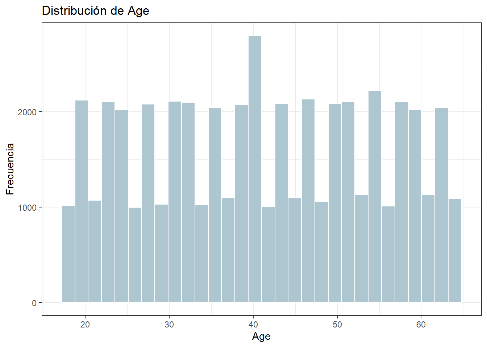
La distribución de Age se ve bastante uniforme a lo largo de todo el rango de edades, sin un sesgo marcado hacia ningún extremo, lo que coincide con lo que ya se había visto en el resumen numérico (media y 50% muy parecidos). Se nota un patrón repetitivo de barras altas y bajas alternadas, y destaca un pico bastante más alto que el resto alrededor de los 40-41 años, donde la frecuencia supera las 60,000, mientras que en el resto de las edades la frecuencia se mantiene relativamente estable entre 25,000 y 50,000 aproximadamente.ggplot(df, aes(y = Age)) +
geom_boxplot(fill = "#AEC6CF") +
labs(title = "Boxplot de Age", y = "Age")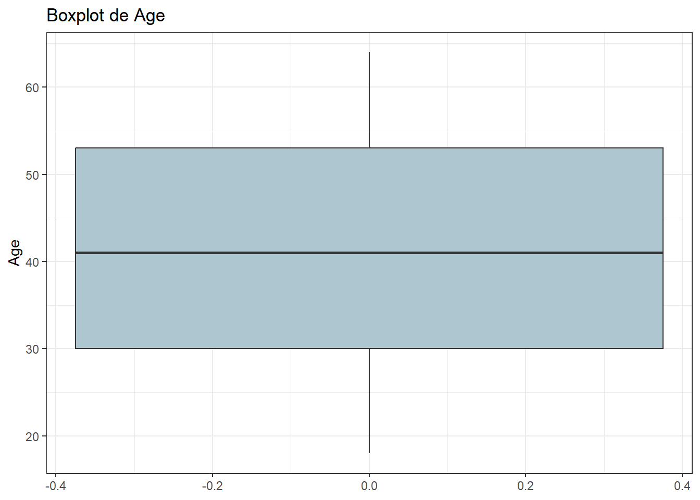
El boxplot de Age confirma lo observado en el histograma: no hay ningún punto atípico, ya que los bigotes cubren todo el rango de datos, desde 18 hasta 64 años, sin valores que se salgan de ese rango. El 50% de los clientes tiene una edad por debajo de 41 años, mientras que el otro 50% está por encima. La caja, que representa el 50% central de los datos, va de 30 a 53 años aproximadamente, lo cual muestra una dispersión bastante amplia y simétrica alrededor del centro, sin evidencia de sesgo hacia ningún lado.
Variable Annual Income:
ggplot(df, aes(x = `Annual Income`)) +
geom_histogram(bins = 30, fill = "#AEC6CF", color = "white") +
labs(title = "Distribución de Annual Income", x = "Annual Income", y = "Frecuencia")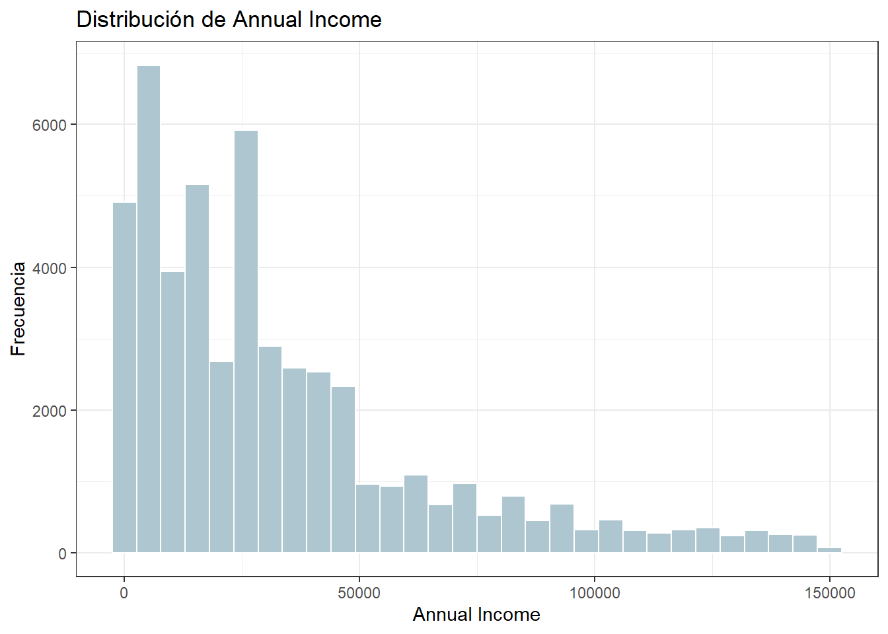
La distribución de Annual Income confirma el sesgo hacia la derecha que ya se había detectado en el resumen numérico (media mayor que el 50%). La mayoría de los clientes se concentra en ingresos bajos, principalmente entre 0 y 30,000, con un pico bastante marcado alrededor de 10,000-15,000. A partir de los 50,000, la frecuencia cae de forma notable y sigue disminuyendo de manera constante hasta casi desaparecer cerca de los 150,000, lo que indica que los ingresos anuales altos son poco frecuentes dentro del conjunto de datos.
ggplot(df, aes(y = `Annual Income`)) +
geom_boxplot(fill = "#AEC6CF") +
labs(title = "Boxplot de Annual Income", y = "Annual Income")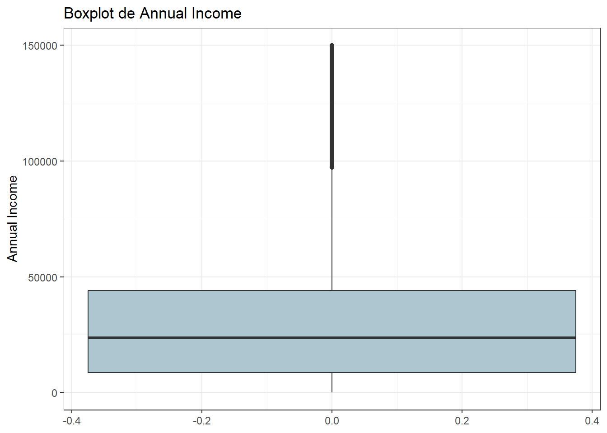
El boxplot de Annual Income refleja el sesgo hacia la derecha que ya se había visto en el histograma. El 50% de los clientes tiene un ingreso anual por debajo de 24,000 aproximadamente, mientras que el otro 50% está por encima de ese valor. La caja, que representa el 50% central de los datos, va desde cerca de 8,000 hasta 44,000. El bigote superior se extiende hasta casi 97,000, y de ahí para arriba aparecen varios puntos atípicos que llegan hasta 150,000, mostrando que existe un grupo pequeño de clientes con ingresos bastante más altos que el resto.
Variable Health Score:
ggplot(df, aes(x = `Health Score`)) +
geom_histogram(bins = 30, fill = "#AEC6CF", color = "white") +
labs(title = "Distribución de Health Score", x = "Health Score", y = "Frecuencia")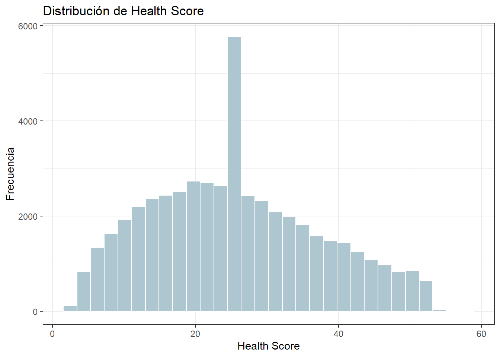
La distribución de Health Score se ve bastante simétrica en general, con forma de campana, lo que coincide con el resumen numérico donde la media y el 50% de los datos eran muy parecidos. Se observa un pico bastante marcado justo en el centro de la distribución, con una frecuencia notablemente más alta que las barras vecinas, lo que podría deberse a los valores imputados con la mediana en esa variable. Fuera de ese pico, la forma general de la distribución muestra un crecimiento gradual desde valores bajos hasta el centro, y luego una disminución igual de gradual hacia valores más altos, sin un sesgo marcado hacia ningún lado.
ggplot(df, aes(y = `Health Score`)) +
geom_boxplot(fill = "#AEC6CF") +
labs(title = "Boxplot de Health Score", y = "Health Score")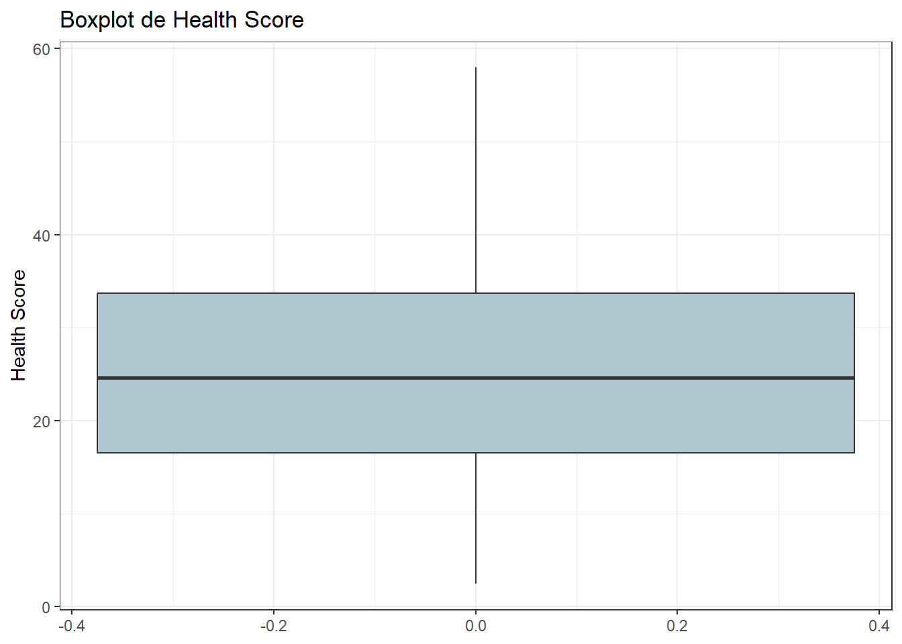
El boxplot de Health Score no muestra ningún punto atípico, ya que los bigotes cubren todo el rango de los datos, desde cerca de 2 hasta casi 59. El 50% de los clientes tiene un Health Score por debajo de 24-25 aproximadamente, mientras que el otro 50% está por encima. La caja, que representa el 50% central de los datos, va de 17 a 34 aproximadamente, mostrando una dispersión moderada y bastante simétrica alrededor del centro, sin evidencia de sesgo hacia ningún lado.
Variable Credit Score
ggplot(df, aes(x = `Credit Score`)) +
geom_histogram(bins = 30, fill = "#AEC6CF", color = "white") +
labs(title = "Distribución de Credit Score", x = "Credit Score", y = "Frecuencia")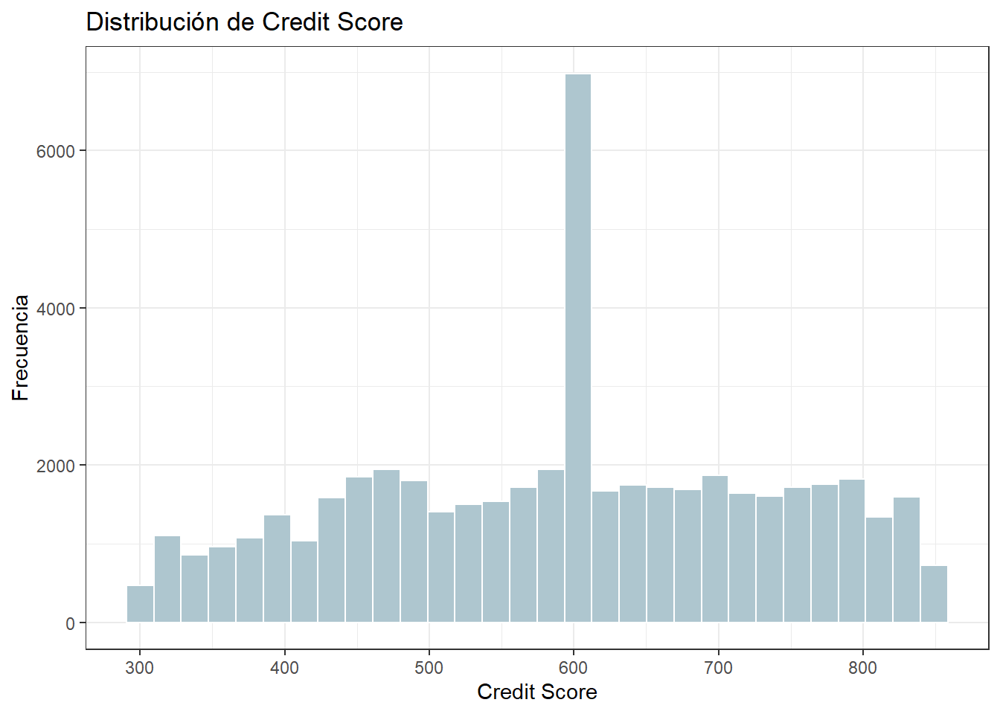
La distribución de Credit Score se ve bastante simétrica en general, con una forma relativamente plana entre 300 y 850, sin un sesgo marcado hacia ningún lado. Se destaca un pico bastante pronunciado alrededor de 590-600, con una frecuencia mucho más alta que el resto de las barras, lo cual probablemente se debe a los valores imputados con la mediana en esa variable. Fuera de ese pico, el resto de las barras se mantiene relativamente constante, entre 20,000 y 45,000 aproximadamente, mostrando que los distintos rangos de puntaje crediticio están bastante bien distribuidos entre los clientes.
ggplot(df, aes(y = `Credit Score`)) +
geom_boxplot(fill = "#AEC6CF") +
labs(title = "Boxplot de Credit Score", y = "Credit Score")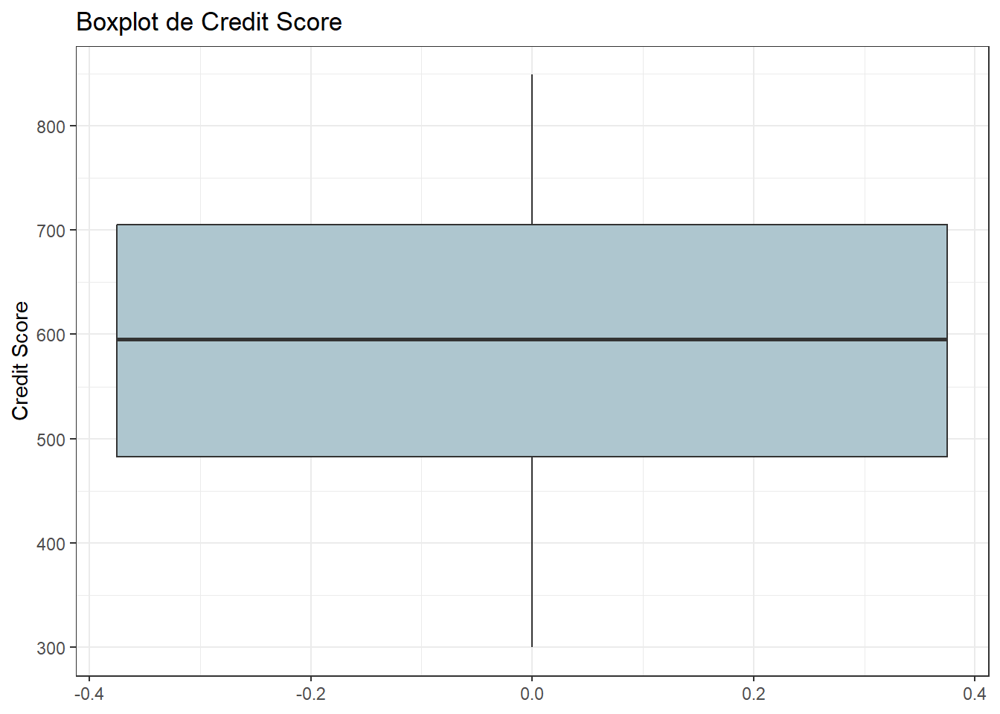
El boxplot de Credit Score no muestra ningún punto atípico, ya que los bigotes cubren todo el rango de los datos, desde 300 hasta 849. El 50% de los clientes tiene un Credit Score por debajo de 595 aproximadamente, mientras que el otro 50% está por encima. La caja, que representa el 50% central de los datos, va de 484 a 706 aproximadamente, mostrando una dispersión moderada y bastante simétrica alrededor del centro, sin evidencia de sesgo hacia ningún lado.
Variable Vehicle Age:
ggplot(df, aes(x = `Vehicle Age`)) +
geom_histogram(bins = 30, fill = "#AEC6CF", color = "white") +
labs(title = "Distribución de Vehicle Age", x = "Vehicle Age", y = "Frecuencia")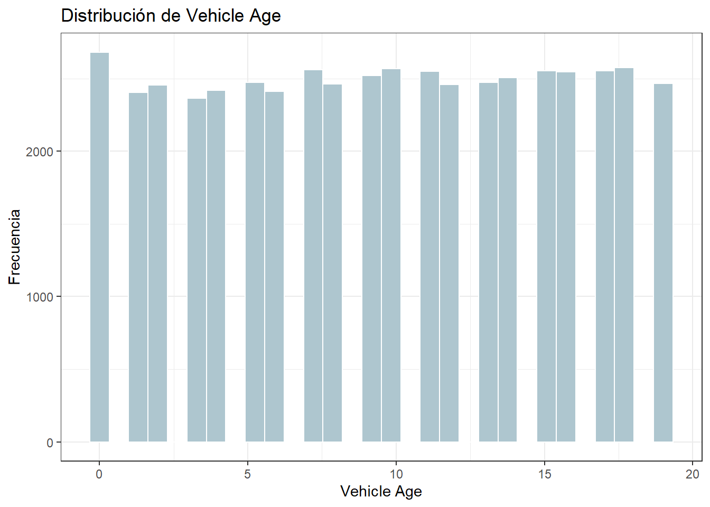
La distribución de Vehicle Age se ve prácticamente uniforme a lo largo de todo el rango, sin ningún pico marcado ni sesgo hacia algún lado. Todas las barras se mantienen en un rango bastante similar, entre 57,000 y 63,000 aproximadamente, lo que indica que los vehículos están bien distribuidos entre 0 y 19 años de antigüedad, sin que ningún rango de edad predomine claramente sobre los demás.
ggplot(df, aes(y = `Vehicle Age`)) +
geom_boxplot(fill = "#AEC6CF") +
labs(title = "Boxplot de Vehicle Age", y = "Vehicle Age")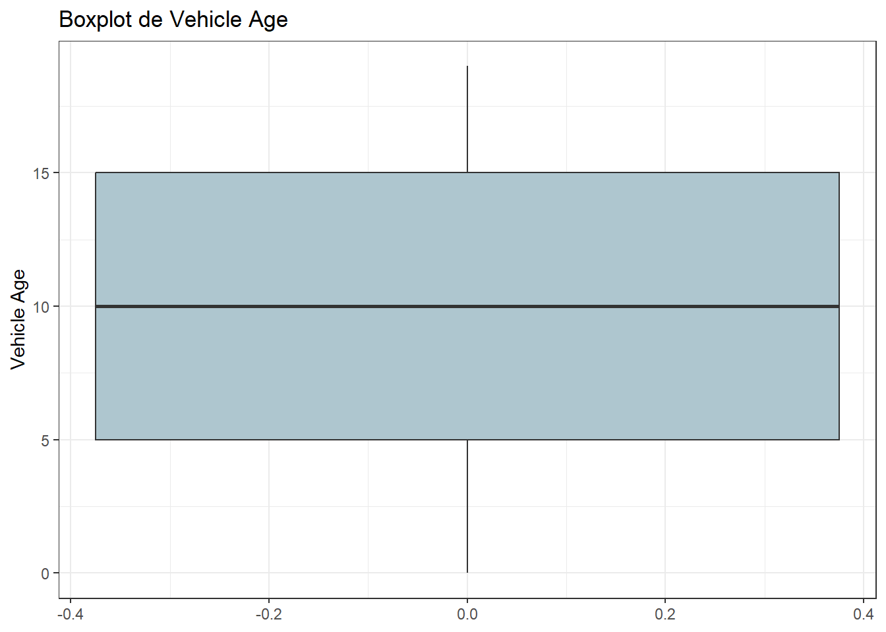
El boxplot de Vehicle Age no muestra ningún punto atípico, ya que los bigotes cubren todo el rango de los datos, desde 0 hasta 19 años. El 50% de los vehículos tiene una antigüedad por debajo de 10 años, mientras que el otro 50% está por encima. La caja, que representa el 50% central de los datos, va de 5 a 15 años aproximadamente, mostrando una dispersión moderada y bastante simétrica alrededor del centro, sin evidencia de sesgo hacia ningún lado.
Variable Insurance Duration:
ggplot(df, aes(x = `Insurance Duration`)) +
geom_histogram(bins = 30, fill = "#AEC6CF", color = "white") +
labs(title = "Distribución de Insurance Duration", x = "Insurance Duration", y = "Frecuencia")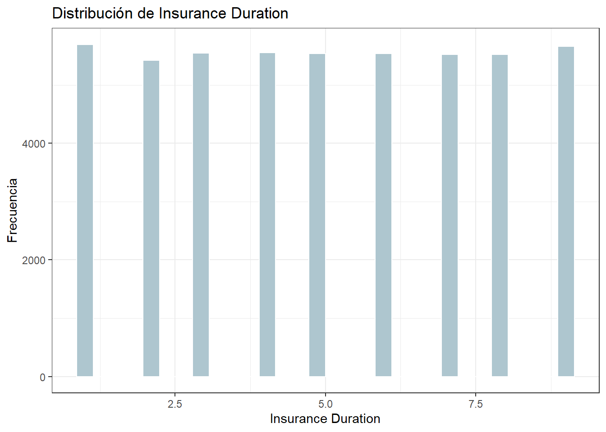
Aquí las nueve barras están prácticamente a la misma altura, todas rondando entre 130,000 y 140,000, lo que deja ver una distribución muy pareja de Insurance Duration entre 1 y 9 años. No hay ninguna duración que destaque sobre las demás, así que los clientes parecen repartirse de forma casi equitativa entre todos los periodos de duración posibles.
ggplot(df, aes(y = `Insurance Duration`)) +
geom_boxplot(fill = "#AEC6CF") +
labs(title = "Boxplot de Insurance Duration", y = "Insurance Duration")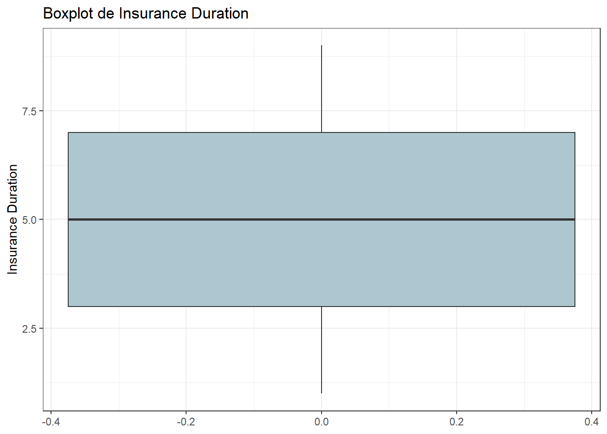
El boxplot de Insurance Duration no presenta valores atípicos, con bigotes que van desde 1 hasta 9 años, cubriendo todo el rango de los datos. La caja se ubica entre 3 y 7 años aproximadamente, y la mediana está justo en 5, dividiendo los datos en dos mitades iguales. Esto confirma la simetría que ya se notaba en el histograma, sin ningún indicio de sesgo.
Variable Number of Dependents:
ggplot(df, aes(x = `Number of Dependents`)) +
geom_histogram(bins = 30, fill = "#AEC6CF", color = "white") +
labs(title = "Distribución de Number of Dependents", x = "Number of Dependents", y = "Frecuencia")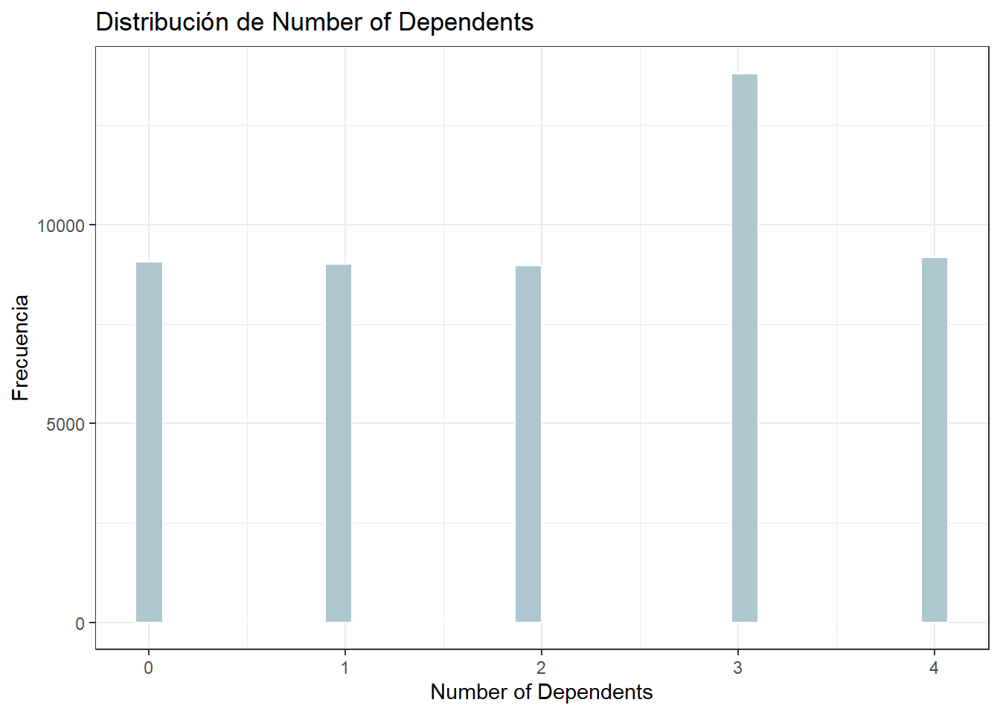
Number of Dependents solo toma cinco valores posibles (0, 1, 2, 3 y 4), y se nota que las categorías 0, 1, 2 y 4 tienen una frecuencia bastante pareja, alrededor de 215,000-220,000 cada una. El valor 3 sobresale claramente con más de 300,000 registros, probablemente porque ahí se concentraron los datos imputados con la moda de esta variable. Fuera de ese detalle, no hay un patrón de crecimiento o decrecimiento particular entre las categorías, solo esa diferencia puntual en el 3.
ggplot(df, aes(y = `Number of Dependents`)) +
geom_boxplot(fill = "#AEC6CF") +
labs(title = "Boxplot de Number of Dependents", y = "Number of Dependents")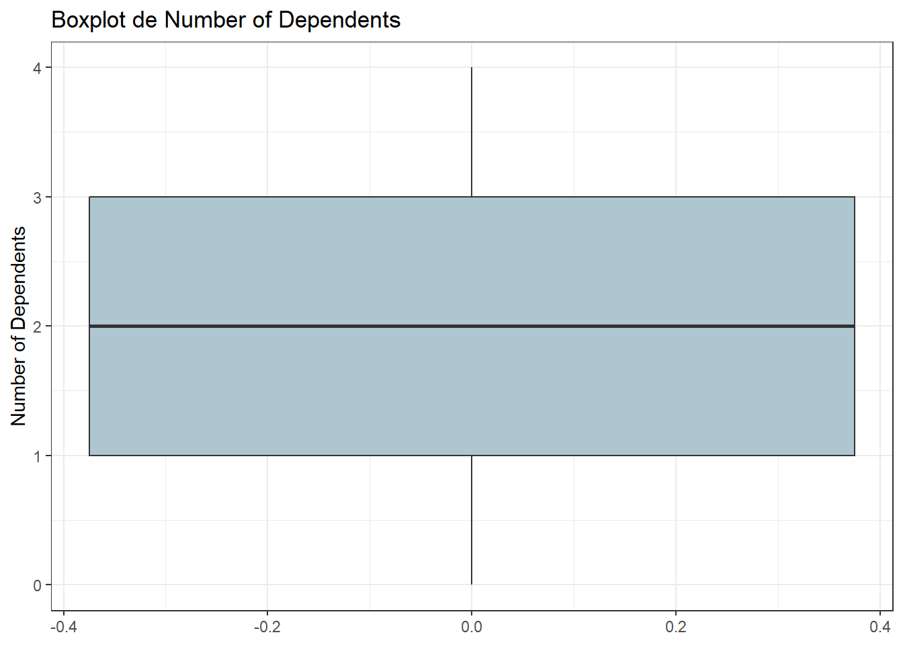
No se aprecian valores atípicos en este boxplot, ya que los bigotes abarcan todo el rango posible, de 0 a 4 dependientes. La caja va de 1 a 3, con la mediana justo en 2, quedando así dividida la mitad de los datos entre esos valores. Al tratarse de una variable con tan pocas categorías, el boxplot resulta bastante simple, pero confirma la simetría que ya se veía en el histograma.
Variable Previous Claims:
ggplot(df, aes(x = `Previous Claims`)) +
geom_histogram(bins = 30, fill = "#AEC6CF", color = "white") +
labs(title = "Distribución de Previous Claims", x = "Previous Claims", y = "Frecuencia")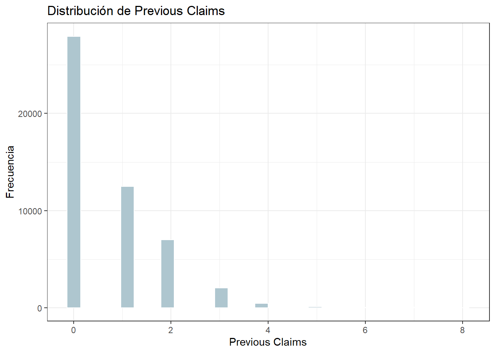
Se observa un sesgo hacia la derecha bastante marcado en esta variable. La mayor parte de los clientes se concentra en el valor 0, con más de 600,000 registros, y a medida que aumenta el número de reclamos previos, la frecuencia va cayendo de forma muy pronunciada: el valor 1 ya baja a menos de la mitad, y de ahí en adelante los valores de 2, 3, 4 y más son cada vez más raros, casi desapareciendo después del 5. Esto tiene bastante sentido, ya que lo esperable es que la mayoría de los asegurados no tenga reclamos previos, y solo una minoría acumule varios.
ggplot(df, aes(y = `Previous Claims`)) +
geom_boxplot(fill = "#AEC6CF") +
labs(title = "Boxplot de Previous Claims", y = "Previous Claims")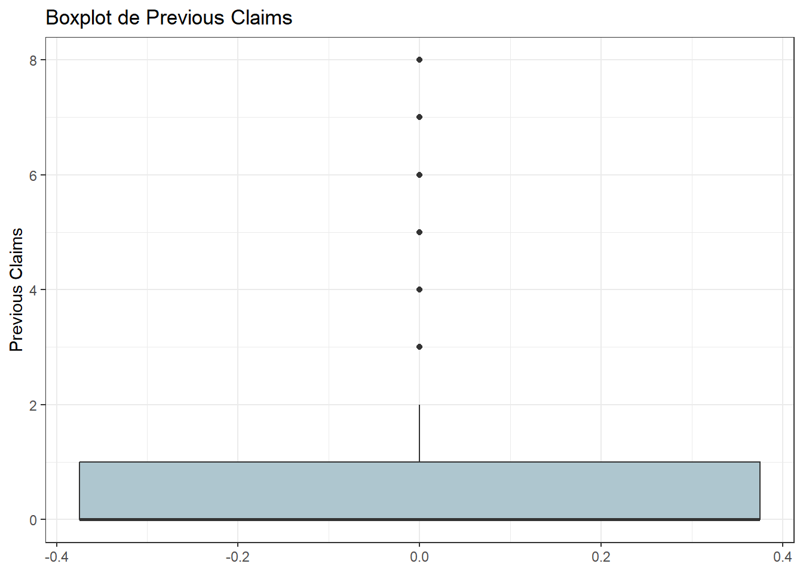
Aquí sí se ven varios puntos considerados atípicos, correspondientes a los clientes con 3, 4, 5, 6, 7, 8 y 9 reclamos previos, ya que se salen del bigote superior que llega hasta 2. La caja va de 0 a 1, con la mediana ubicada en 0, lo que confirma que la mitad de los clientes no ha tenido ningún reclamo previo. Este comportamiento es coherente con lo visto en el histograma: la gran mayoría se concentra en valores bajos, y los pocos casos con varios reclamos aparecen como valores extremos dentro de la variable.
Continuaremos con las variables categóricas
Variable Gender:
ggplot(df, aes(x = Gender)) +
geom_bar(fill = "#AEC6CF") +
labs(title = "Distribución de Gender", x = "Gender", y = "Frecuencia")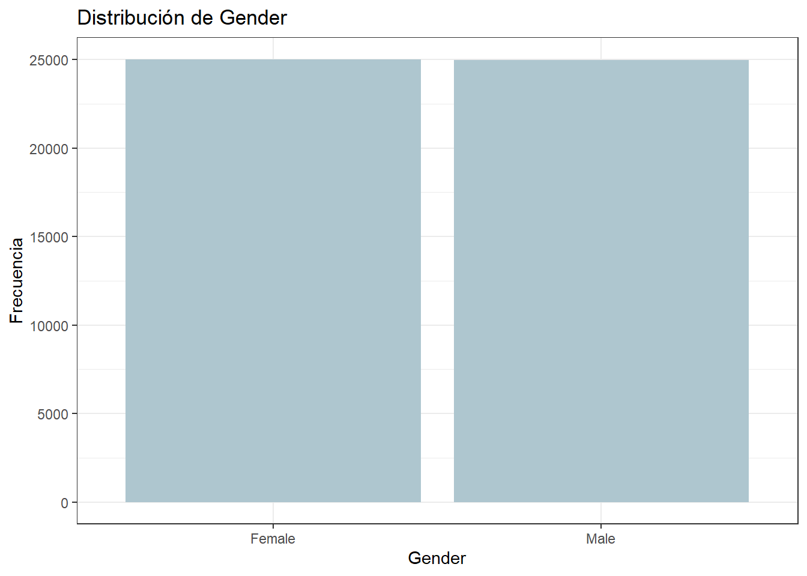
La cantidad de clientes hombres y mujeres es prácticamente igual, ambas categorías rondando los 600,000 registros cada una. No hay ningún desbalance entre géneros dentro del dataset, lo que indica que la muestra está bien equilibrada en cuanto a esta variable.
Variable Marital Status:
ggplot(df, aes(x = `Marital Status`)) +
geom_bar(fill = "#AEC6CF") +
labs(title = "Distribución de Marital Status", x = "Marital Status", y = "Frecuencia")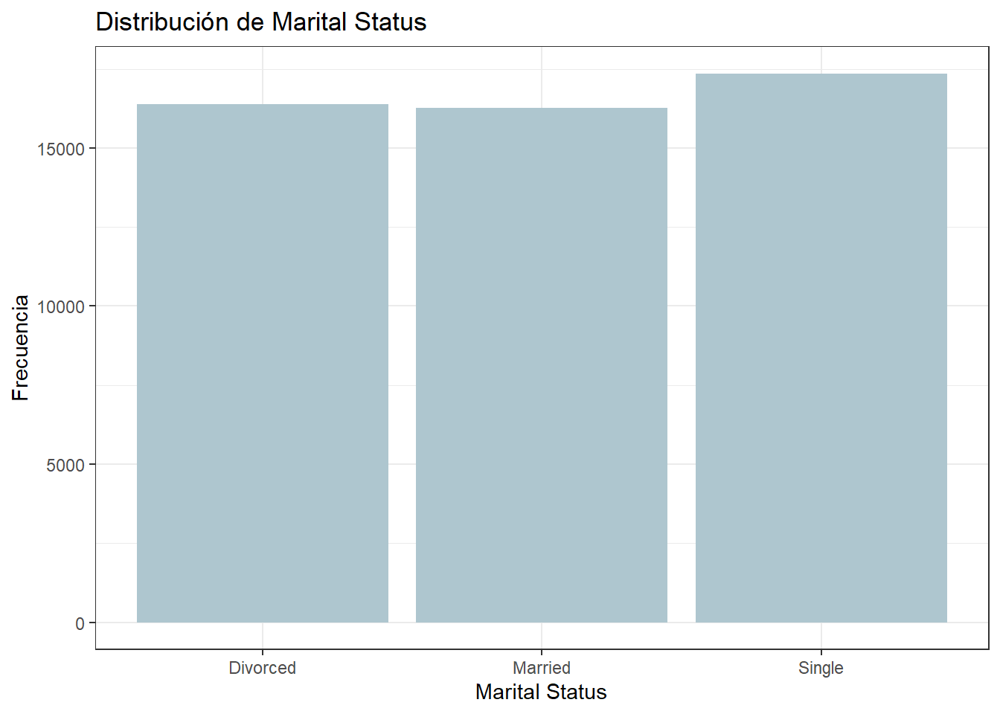
Las tres categorías de estado civil están bastante balanceadas, con valores muy cercanos entre sí. “Single” tiene una frecuencia ligeramente superior a las otras dos, rondando los 415,000 registros, mientras que “Divorced” y “Married” se ubican en torno a los 390,000-395,000 cada uno. No se aprecia una diferencia considerable entre las categorías, por lo que ninguna domina claramente sobre las demás.
Variable Education Level:
ggplot(df, aes(x = `Education Level`)) +
geom_bar(fill = "#AEC6CF") +
labs(title = "Distribución de Education Level", x = "Education Level", y = "Frecuencia")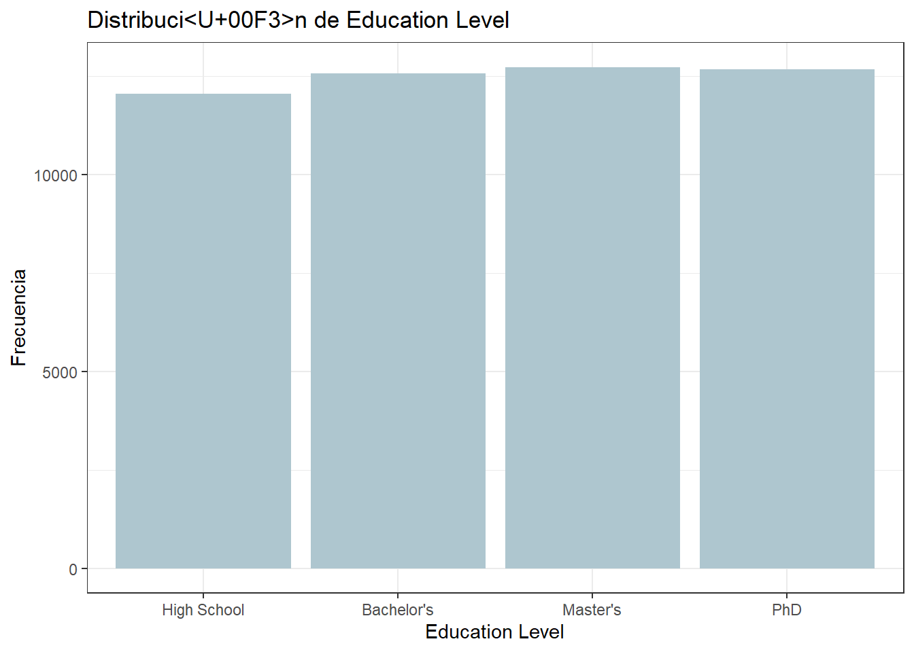
Los cuatro niveles educativos muestran frecuencias bastante parejas entre sí, todas alrededor de 290,000-300,000 registros. “High School” tiene una frecuencia apenas un poco menor a las demás, mientras que “Bachelor’s”, “Master’s” y “PhD” resultan prácticamente idénticos en cantidad. Al respetarse el orden lógico de menor a mayor nivel educativo en el eje, se aprecia que no existe una tendencia hacia algún nivel en particular, sino una distribución equilibrada entre todos.
Variable Occupation:
ggplot(df, aes(x = Occupation)) +
geom_bar(fill = "#AEC6CF") +
labs(title = "Distribución de Occupation", x = "Occupation", y = "Frecuencia")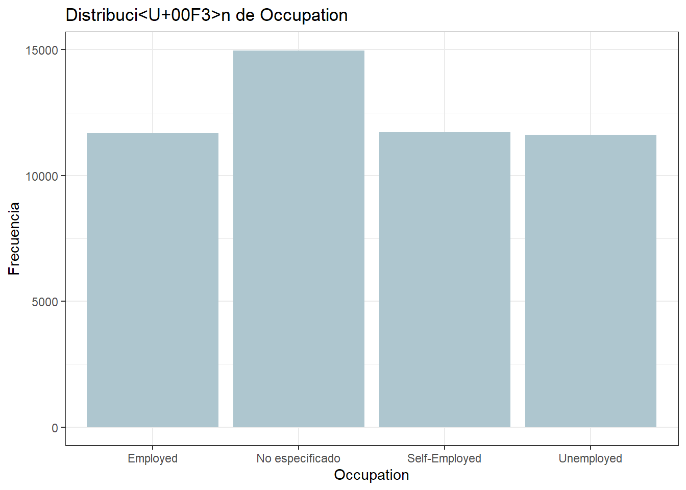
La categoría “No especificado” resulta ser la más frecuente de todas, superando los 350,000 registros, lo cual tiene sentido ya que ahí se agrupó ese casi 30% de datos que originalmente estaban vacíos. Las otras tres categorías (“Employed”, “Self-Employed” y “Unemployed”) se mantienen bastante parejas entre sí, cada una alrededor de 280,000 registros, sin diferencias notables entre ellas.
Variable Location:
ggplot(df, aes(x = Location)) +
geom_bar(fill = "#AEC6CF") +
labs(title = "Distribución de Location", x = "Location", y = "Frecuencia")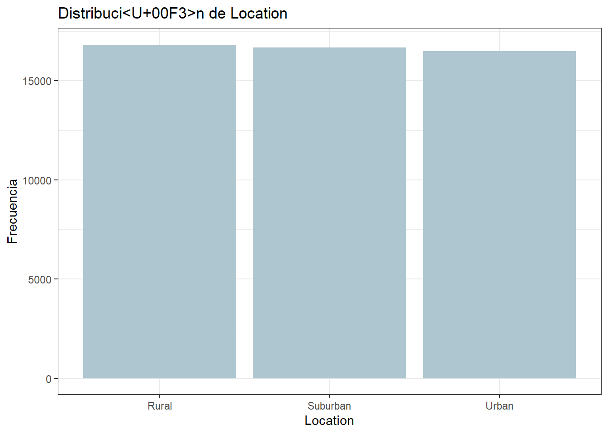
Las tres ubicaciones están casi perfectamente equilibradas, todas alrededor de 400,000 registros cada una. No se distingue ninguna diferencia relevante entre Rural, Suburban y Urban, así que los clientes están repartidos de forma prácticamente uniforme entre las tres zonas geográficas.
Variable Policy Type:
ggplot(df, aes(x = `Policy Type`)) +
geom_bar(fill = "#AEC6CF") +
labs(title = "Distribución de Policy Type", x = "Policy Type", y = "Frecuencia")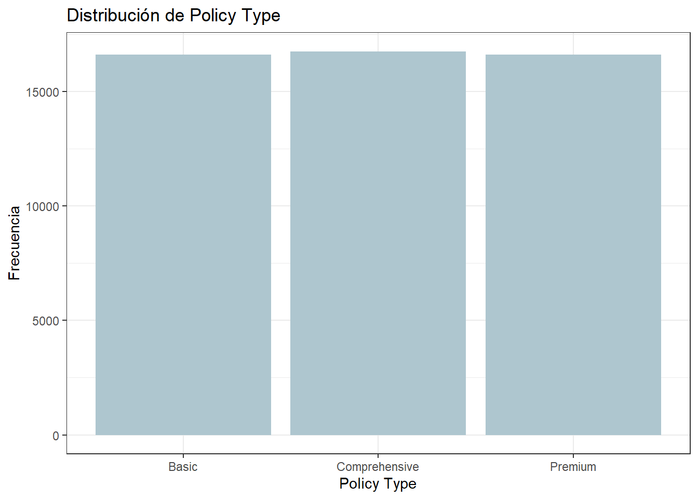
Los tres tipos de póliza tienen frecuencias prácticamente idénticas, todas alrededor de 400,000 registros. Basic, Comprehensive y Premium están repartidos de manera casi perfectamente equitativa entre los clientes, sin que ninguno predomine sobre los otros.
Variable Customer Feedback:
ggplot(df, aes(x = `Customer Feedback`)) +
geom_bar(fill = "#AEC6CF") +
labs(title = "Distribución de Customer Feedback", x = "Customer Feedback", y = "Frecuencia")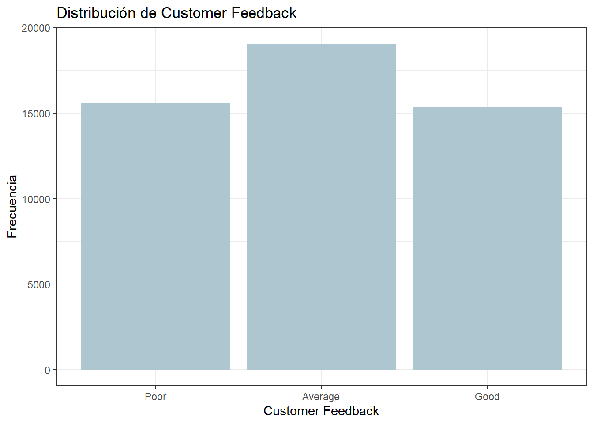
La categoría “Average” se destaca ligeramente por encima de las otras dos, acercándose a los 450,000 registros, probablemente porque ahí se concentraron los datos imputados con la moda de esta variable. “Poor” y “Good” quedan bastante parejos entre sí, ambos alrededor de 370,000-380,000 registros. En general, no hay un desbalance drástico entre las tres categorías, aunque “Average” sí resulta ser la opinión más común entre los clientes.
Variable Smoking Status:
ggplot(df, aes(x = `Smoking Status`)) +
geom_bar(fill = "#AEC6CF") +
labs(title = "Distribución de Smoking Status", x = "Smoking Status", y = "Frecuencia")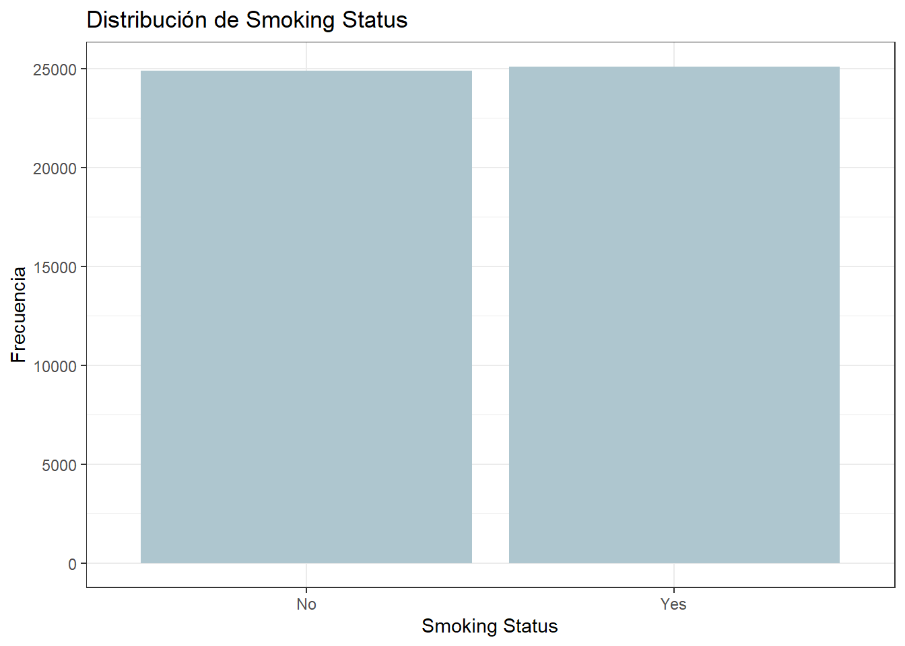
Los clientes fumadores y no fumadores están casi igual de representados, ambas categorías rondando los 600,000 registros. No se observa un desbalance importante entre “No” y “Yes”, así que la muestra está bastante equilibrada respecto a este hábito.
Variable Exercise Frequency:
ggplot(df, aes(x = `Exercise Frequency`)) +
geom_bar(fill = "#AEC6CF") +
labs(title = "Distribución de Exercise Frequency", x = "Exercise Frequency", y = "Frecuencia")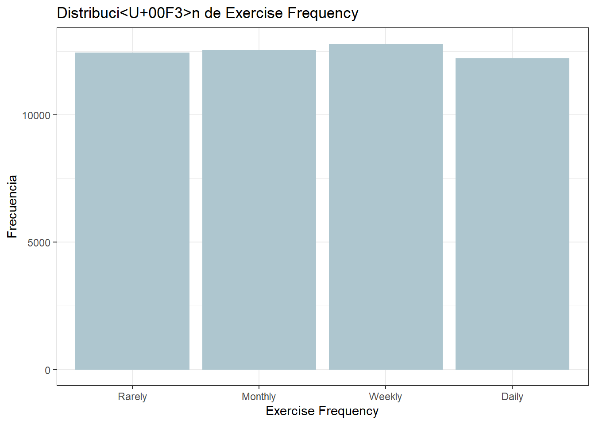
Las cuatro categorías de frecuencia de ejercicio se mantienen muy parejas, todas alrededor de 295,000-305,000 registros. “Weekly” tiene una frecuencia apenas un poco mayor que las demás, mientras que “Daily” queda ligeramente por debajo. En general, respetando el orden lógico de menor a mayor frecuencia, no se aprecia una tendencia clara hacia algún hábito de ejercicio en particular, sino una distribución bastante equilibrada entre todos.
Variable Property Type:
ggplot(df, aes(x = `Property Type`)) +
geom_bar(fill = "#AEC6CF") +
labs(title = "Distribución de Property Type", x = "Property Type", y = "Frecuencia")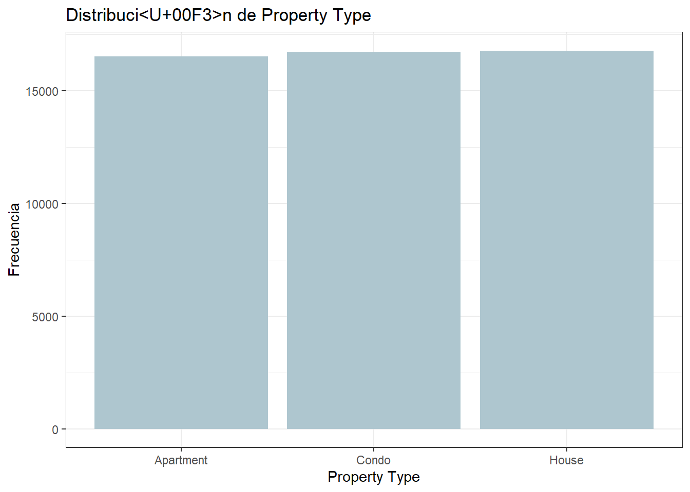
Las tres categorías de tipo de propiedad están casi perfectamente equilibradas, todas rondando los 400,000 registros. No hay ningún tipo de vivienda que predomine sobre los demás, así que Apartment, Condo y House se reparten de forma prácticamente uniforme entre los clientes.
2.9 Análisis bivariado (Variable característica vs Variable respuesta)
Una vez caracterizadas las variables de forma individual, el siguiente paso es analizar cómo se relacionan con la variable respuesta, Premium Amount, con el fin de identificar posibles patrones o tendencias que puedan ser útiles más adelante.
Age vs Premium Amount:
ggplot(df, aes(x = Age, y = `Premium Amount`)) +
geom_point(color = "#5B7C99", alpha = 0.02, size = 0.5) +
labs(title = "Age vs Premium Amount", x = "Age", y = "Premium Amount")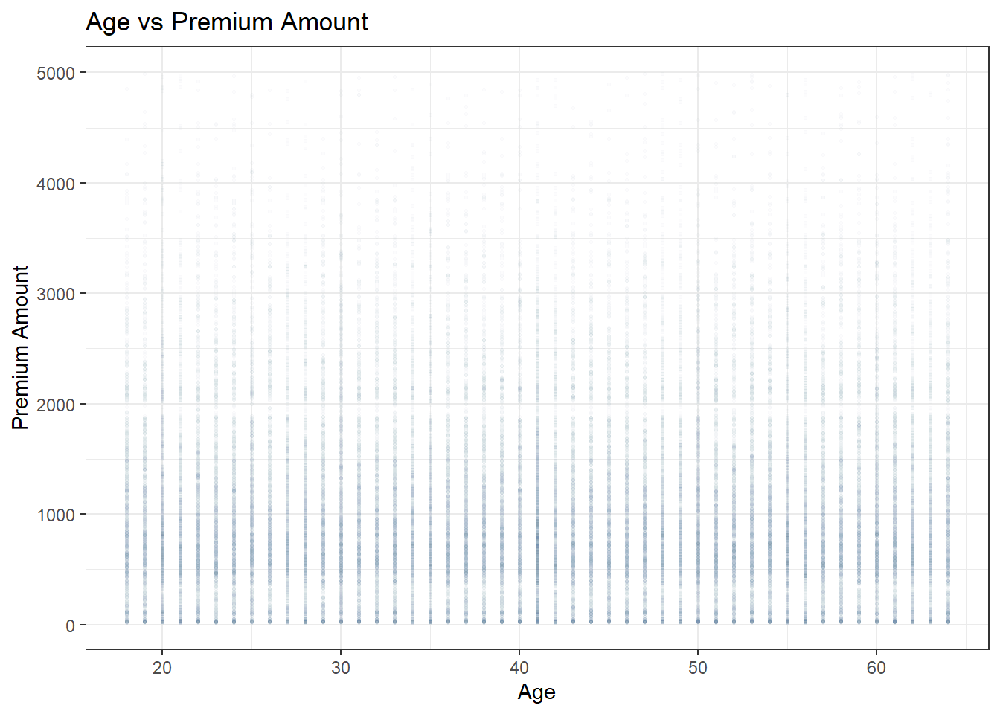
Se aprecia que, para cualquier edad, la mayor concentración de valores de Premium Amount está entre 0 y 2,000 aproximadamente, coincidiendo con lo que ya se había visto en el histograma de esa variable, donde se notaba el pico principal justo en ese rango. Por encima de 2,000, los puntos se vuelven más dispersos, indicando que hay menos clientes con primas altas, sin importar la edad que tengan. En general, se confirma que no existe una relación clara entre Age y Premium Amount, ya que el patrón de dispersión se mantiene prácticamente igual a lo largo de todas las edades.
Annual Income vs Premium Amount:
ggplot(df, aes(x = `Annual Income`, y = `Premium Amount`)) +
geom_point(color = "#5B7C99", alpha = 0.02, size = 0.5) +
labs(title = "Annual Income vs Premium Amount", x = "Annual Income", y = "Premium Amount")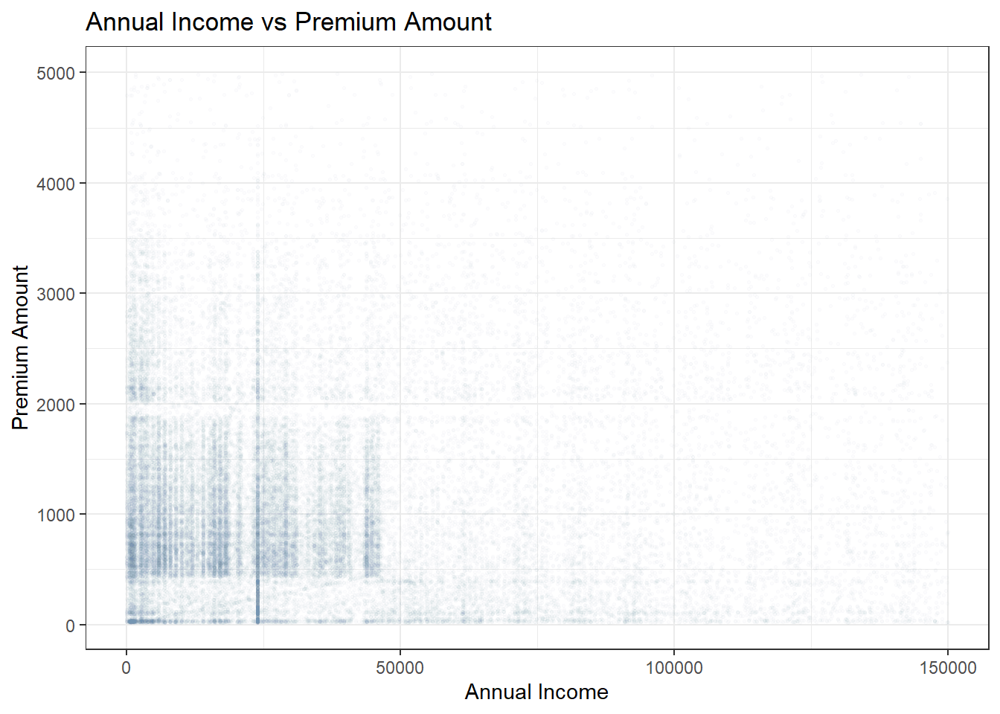
Se observa que, para prácticamente todos los niveles de ingreso anual, los valores de Premium Amount se distribuyen a lo largo de todo el rango, desde 0 hasta 5,000. Sin embargo, se nota una mayor concentración de puntos en la zona de ingresos bajos, entre 0 y 50,000, especialmente en primas entre 0 y 2,000, mientras que a partir de los 50,000 la cantidad de puntos disminuye considerablemente, dejando ver menos densidad de datos en esa zona. Esto sugiere que no existe una relación lineal clara entre Annual Income y Premium Amount, ya que el comportamiento de la prima parece mantenerse similar independientemente del nivel de ingreso del cliente.
Opción extra para el profe:
ggplot(df, aes(x = `Annual Income`, y = `Premium Amount`)) +
geom_bin2d(bins = 50) +
scale_fill_gradient(low = "#D6E4EA", high = "#2C4A5E") +
labs(title = "Annual Income vs Premium Amount", x = "Annual Income", y = "Premium Amount", fill = "Cantidad")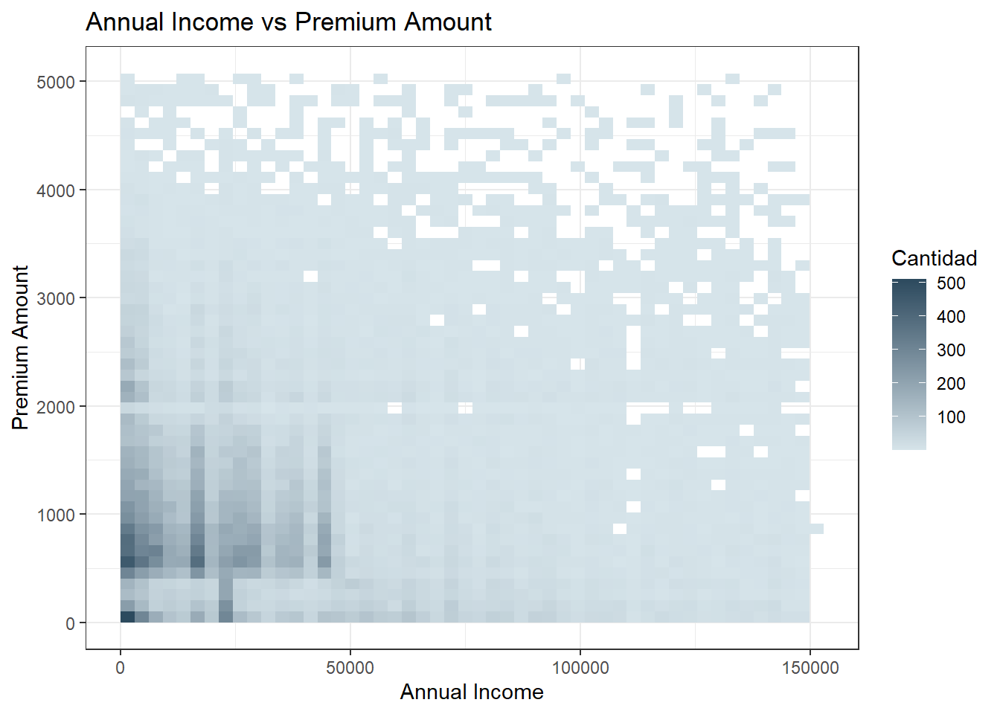
Health Score vs Premium Amount:
ggplot(df, aes(x = `Health Score`, y = `Premium Amount`)) +
geom_point(color = "#5B7C99", alpha = 0.02, size = 0.5) +
labs(title = "Health Score vs Premium Amount", x = "Health Score", y = "Premium Amount")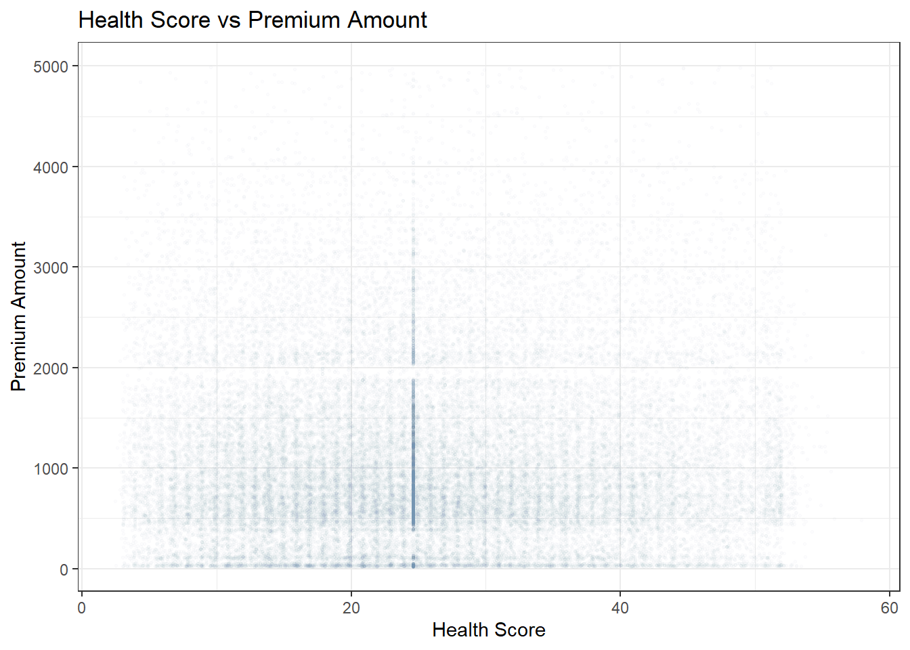
Se observa que, para prácticamente todos los valores de Health Score, los datos de Premium Amount se concentran principalmente entre 0 y 2,000, coincidiendo con lo que ya se había visto en el histograma de la prima. Destaca una línea vertical bastante marcada alrededor de 25, con una densidad de puntos considerablemente mayor que el resto, lo cual probablemente se debe a los valores imputados con la mediana en esa variable. Fuera de ese detalle, no se aprecia una relación clara entre Health Score y Premium Amount, ya que el patrón de dispersión se mantiene bastante similar a lo largo de todo el rango de puntuación de salud.
Credit Score vs Premium Amount:
ggplot(df, aes(x = `Credit Score`, y = `Premium Amount`)) +
geom_point(color = "#5B7C99", alpha = 0.02, size = 0.5) +
labs(title = "Credit Score vs Premium Amount", x = "Credit Score", y = "Premium Amount")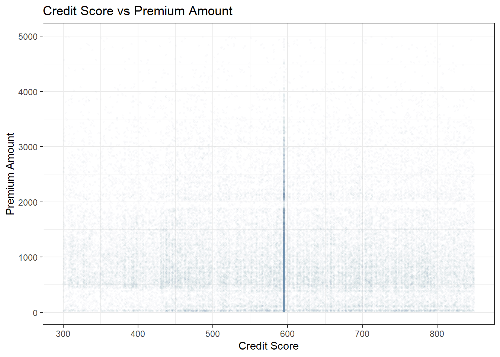
Se aprecia una línea vertical bastante marcada alrededor de 590-600, con mayor densidad de puntos que el resto, lo cual coincide con los valores imputados con la mediana en esta variable. Fuera de ese detalle, la mayor concentración de datos se mantiene entre 0 y 2,000 en Premium Amount, sin importar el puntaje de crédito del cliente, mientras que por encima de 2,000 los puntos se vuelven progresivamente más dispersos. En general, no se observa un patrón claro que relacione Credit Score con Premium Amount, ya que el comportamiento de la prima parece bastante similar a lo largo de todo el rango de puntaje crediticio.
Vehicle Age vs Premium Amount:
ggplot(df, aes(x = `Vehicle Age`, y = `Premium Amount`)) +
geom_point(color = "#5B7C99", alpha = 0.02, size = 0.5) +
labs(title = "Vehicle Age vs Premium Amount", x = "Vehicle Age", y = "Premium Amount")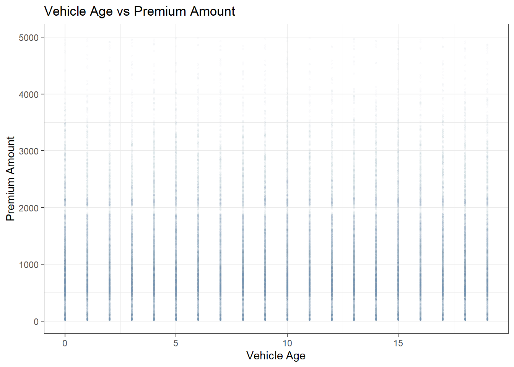
Para cada valor de Vehicle Age, los datos de Premium Amount se distribuyen de manera muy similar entre sí, cubriendo todo el rango desde 0 hasta 5,000, con mayor concentración en la parte baja, entre 0 y 2,000. No se aprecia ninguna tendencia ni patrón que relacione la antigüedad del vehículo con el monto de la prima, ya que las líneas correspondientes a cada edad se ven prácticamente idénticas en forma y densidad.
Insurance Duration vs Premium Amount:
ggplot(df, aes(x = `Insurance Duration`, y = `Premium Amount`)) +
geom_point(color = "#5B7C99", alpha = 0.02, size = 0.5) +
labs(title = "Insurance Duration vs Premium Amount", x = "Insurance Duration", y = "Premium Amount")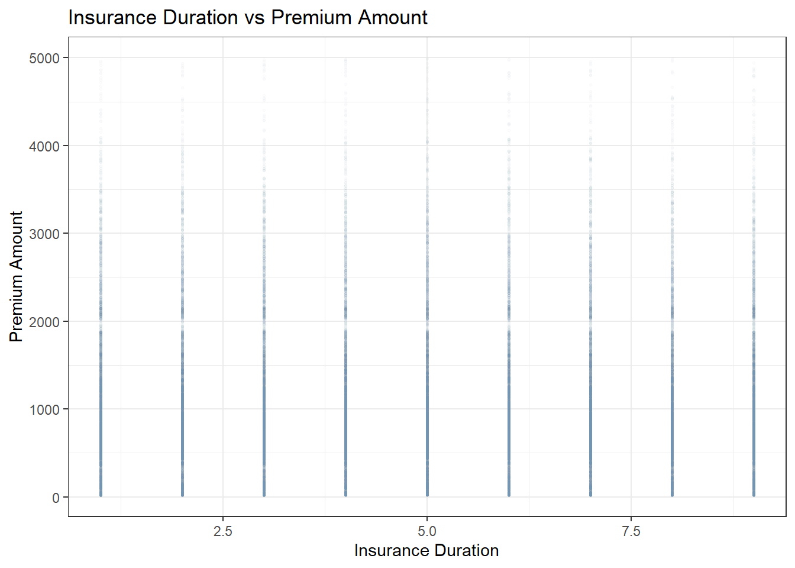
Al igual que con Vehicle Age, cada valor de Insurance Duration muestra una distribución de Premium Amount muy similar entre sí, abarcando todo el rango desde 0 hasta 5,000 y con mayor concentración de puntos en la parte baja. No se identifica ninguna relación entre la duración de la póliza y el monto de la prima, ya que las nueve líneas correspondientes a cada duración lucen prácticamente iguales en forma y densidad.
Number of Dependents vs Premium Amount:
ggplot(df, aes(x = `Number of Dependents`, y = `Premium Amount`)) +
geom_point(color = "#5B7C99", alpha = 0.02, size = 0.5) +
labs(title = "Number of Dependents vs Premium Amount", x = "Number of Dependents", y = "Premium Amount")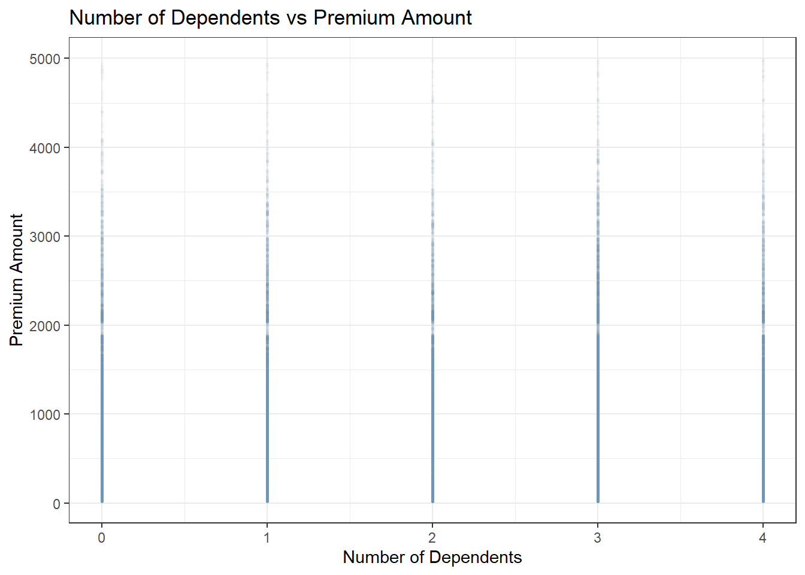
Cada valor de Number of Dependents muestra una distribución de Premium Amount prácticamente idéntica, con datos que van desde 0 hasta 5,000 y mayor concentración en la parte baja. No se aprecia ninguna relación entre la cantidad de dependientes de un cliente y el monto de su prima, ya que las cinco líneas se ven muy similares entre sí tanto en forma como en densidad.
Previous Claims vs Premium Amount:
ggplot(df, aes(x = `Previous Claims`, y = `Premium Amount`)) +
geom_point(color = "#5B7C99", alpha = 0.02, size = 0.5) +
labs(title = "Previous Claims vs Premium Amount", x = "Previous Claims", y = "Premium Amount")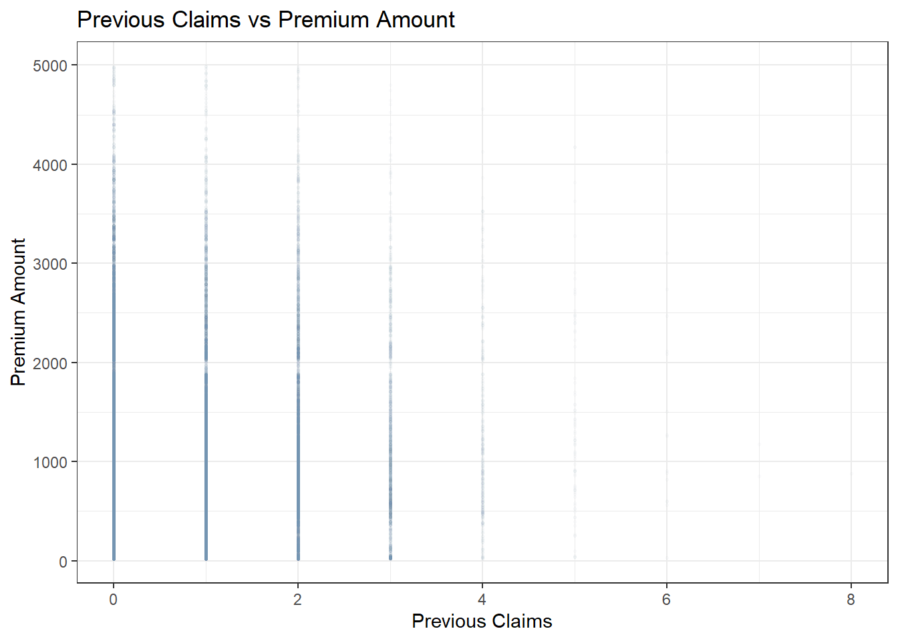
Se observa una diferencia clara respecto a las demás variables numéricas: mientras que en 0 y 1 reclamo previo hay bastantes datos y la línea se ve bien marcada, a partir de 2 reclamos en adelante la cantidad de puntos disminuye notablemente, hasta casi desaparecer en 8 y 9. Esto coincide con la distribución que ya se había visto en el histograma de Previous Claims, donde la mayoría de los clientes se concentra en pocos o ningún reclamo. Dentro de cada nivel, el rango de Premium Amount se mantiene similar, yendo desde 0 hasta 5,000, sin que se note un desplazamiento hacia valores más altos o más bajos conforme aumentan los reclamos. Esto sugiere que Previous Claims no tiene, al menos de forma individual, una relación directa con el monto de la prima.
Gender vs Premium Amount:
ggplot(df, aes(x = Gender, y = `Premium Amount`)) +
geom_boxplot(fill = "#AEC6CF") +
labs(title = "Premium Amount según Gender", x = "Gender", y = "Premium Amount")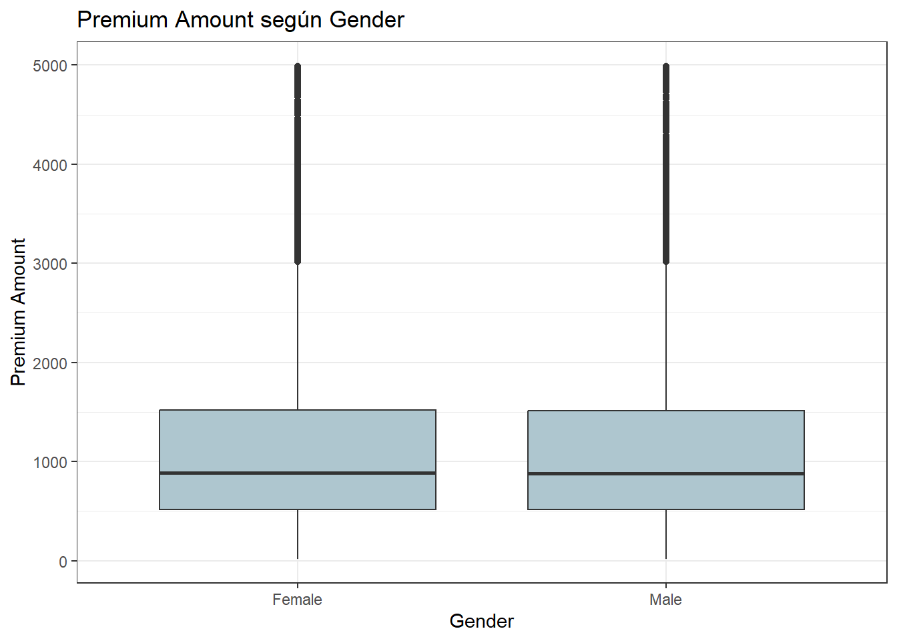
Los boxplots de ambos géneros se ven prácticamente idénticos, con la mediana ubicada cerca de 900 en ambos casos, y la caja abarcando de 500 a 1,500 aproximadamente tanto para Female como para Male. Los bigotes superiores llegan hasta cerca de 3,000, con varios puntos atípicos por encima que se extienden hasta 5,000 en ambos grupos. Esto indica que el género del cliente no parece tener ninguna influencia sobre el monto de la prima, ya que la distribución es prácticamente la misma para ambas categorías.
Marital Status vs Premium Amount:
ggplot(df, aes(x = `Marital Status`, y = `Premium Amount`)) +
geom_boxplot(fill = "#AEC6CF") +
labs(title = "Premium Amount según Marital Status", x = "Marital Status", y = "Premium Amount")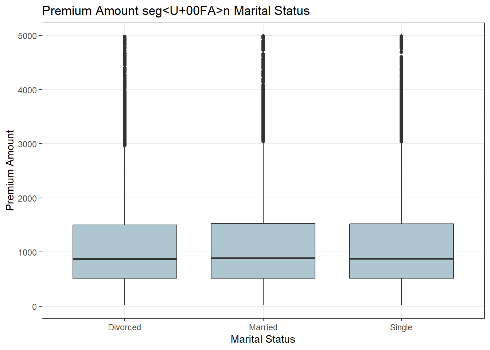
Los tres estados civiles muestran distribuciones muy similares entre sí, con la mediana ubicada cerca de 900 en los tres casos, y la caja abarcando aproximadamente de 500 a 1,500. Los bigotes superiores llegan hasta alrededor de 3,000, con puntos atípicos por encima que se extienden hasta 5,000 en las tres categorías. Esto sugiere que el estado civil del cliente no influye de forma notable en el monto de su prima, ya que Divorced, Married y Single presentan un comportamiento prácticamente igual.
Education Level vs Premium Amount:
ggplot(df, aes(x = `Education Level`, y = `Premium Amount`)) +
geom_boxplot(fill = "#AEC6CF") +
labs(title = "Premium Amount según Education Level", x = "Education Level", y = "Premium Amount")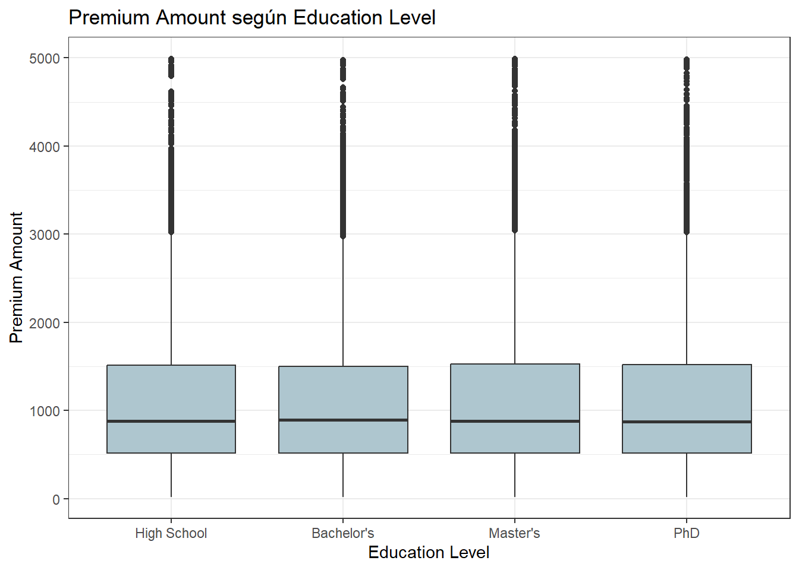
Los cuatro niveles educativos muestran un comportamiento prácticamente idéntico, con la mediana cerca de 900, la caja entre 500 y 1,500, y bigotes superiores hasta 3,000 con puntos atípicos que llegan hasta 5,000 en todos los casos. Ni High School, ni Bachelor’s, Master’s o PhD parecen tener alguna influencia sobre el monto de la prima, ya que las cuatro categorías presentan distribuciones muy similares entre sí.
Occupation vs Premium Amount:
ggplot(df, aes(x = Occupation, y = `Premium Amount`)) +
geom_boxplot(fill = "#AEC6CF") +
labs(title = "Premium Amount según Occupation", x = "Occupation", y = "Premium Amount")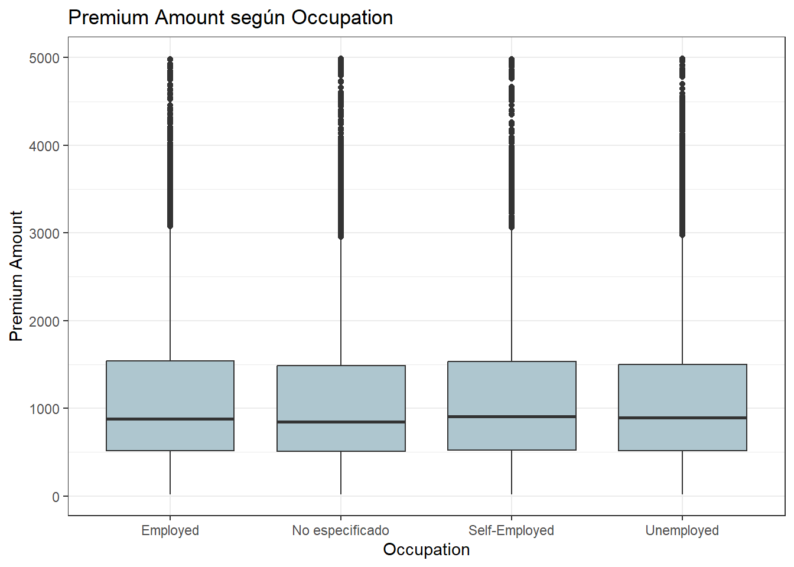
Las cuatro categorías de ocupación se comportan de manera muy similar entre sí, con la mediana rondando los 900, la caja entre 500 y 1,500, y bigotes superiores que llegan hasta 3,000 con puntos atípicos hasta 5,000 en todos los casos. Esto incluye a “No especificado”, que a pesar de agrupar los datos que originalmente faltaban, no muestra ninguna diferencia notable frente a Employed, Self-Employed o Unemployed, sugiriendo que la ocupación del cliente no tiene una relación aparente con el monto de su prima.
Location vs Premium Amount:
ggplot(df, aes(x = Location, y = `Premium Amount`)) +
geom_boxplot(fill = "#AEC6CF") +
labs(title = "Premium Amount según Location", x = "Location", y = "Premium Amount")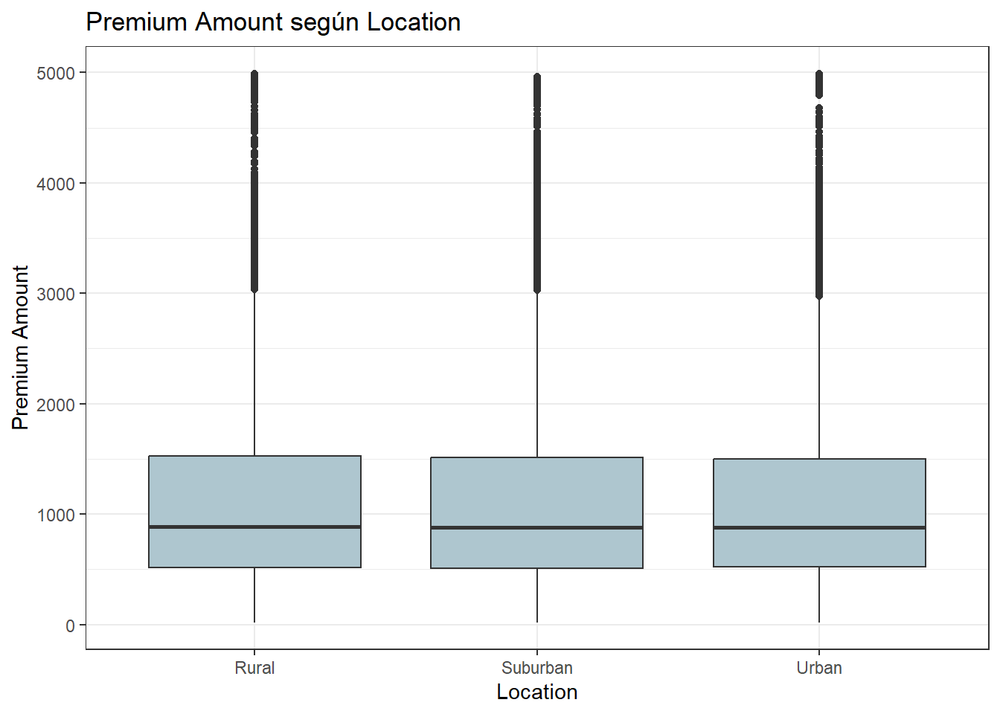
Rural, Suburban y Urban presentan distribuciones prácticamente iguales, con la mediana alrededor de 900, la caja entre 500 y 1,500, y bigotes superiores hasta 3,000 con puntos atípicos que se extienden hasta 5,000 en las tres zonas. La ubicación geográfica del cliente no parece afectar el monto de la prima, ya que el patrón se repite de forma casi idéntica sin importar el tipo de zona.
Policy Type vs Premium Amount:
ggplot(df, aes(x = `Policy Type`, y = `Premium Amount`)) +
geom_boxplot(fill = "#AEC6CF") +
labs(title = "Premium Amount según Policy Type", x = "Policy Type", y = "Premium Amount")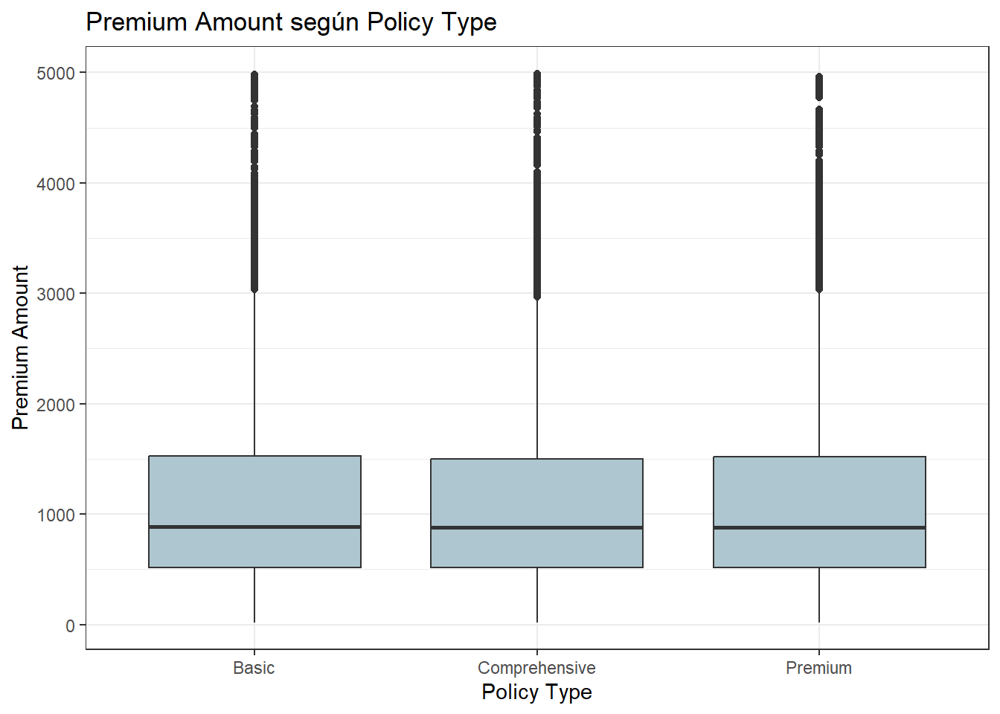
Basic, Comprehensive y Premium muestran distribuciones prácticamente idénticas, con la mediana cerca de 900, la caja entre 500 y 1,500, y bigotes superiores hasta 3,000 con puntos atípicos que llegan hasta 5,000 en las tres categorías. Resulta llamativo que el tipo de póliza no tenga una influencia visible sobre el monto de la prima, ya que uno esperaría que una póliza “Premium” implicara primas más altas que una “Basic”, pero el comportamiento es prácticamente el mismo entre las tres.
Customer Feedback vs Premium Amount:
ggplot(df, aes(x = `Customer Feedback`, y = `Premium Amount`)) +
geom_boxplot(fill = "#AEC6CF") +
labs(title = "Premium Amount según Customer Feedback", x = "Customer Feedback", y = "Premium Amount")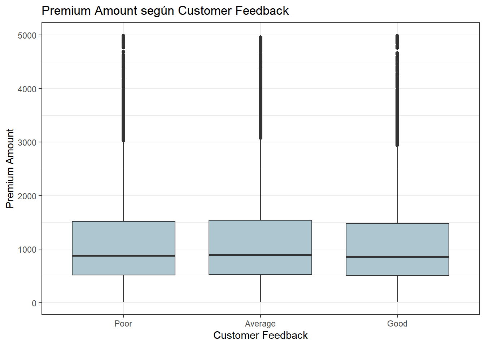
Poor, Average y Good presentan distribuciones muy similares entre sí, con la mediana cerca de 900, la caja entre 500 y 1,500, y bigotes superiores hasta 3,000 con puntos atípicos que llegan hasta 5,000 en las tres categorías. Sorprende que la opinión del cliente no se traduzca en diferencias visibles en el monto de la prima, ya que se mantiene el mismo comportamiento sin importar si el feedback fue negativo, neutro o positivo.
Smoking Status vs Premium Amount:
ggplot(df, aes(x = `Smoking Status`, y = `Premium Amount`)) +
geom_boxplot(fill = "#AEC6CF") +
labs(title = "Premium Amount según Smoking Status", x = "Smoking Status", y = "Premium Amount")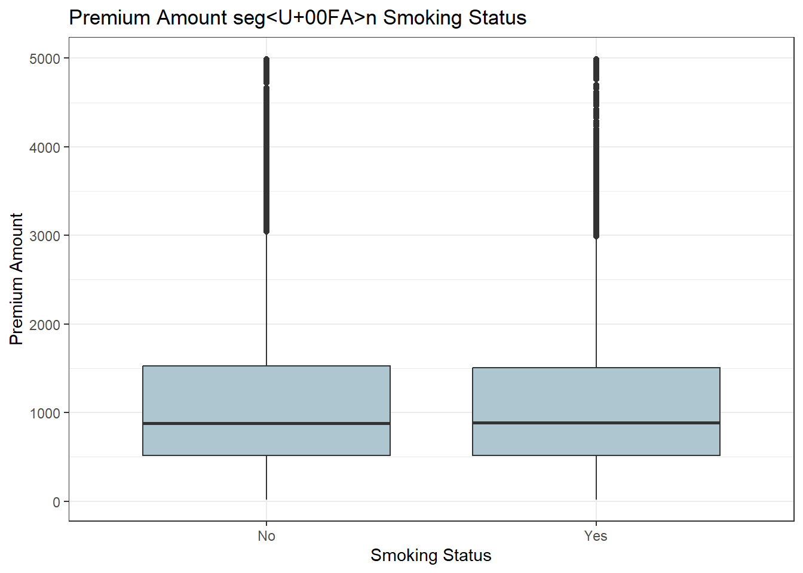
No y Yes muestran distribuciones prácticamente idénticas, con la mediana cerca de 900, la caja entre 500 y 1,500, y bigotes superiores hasta 3,000 con puntos atípicos que llegan hasta 5,000 en ambos grupos. Llama la atención que fumar o no fumar no tenga ningún efecto visible sobre el monto de la prima, cuando normalmente se esperaría que este hábito influyera en el riesgo evaluado por la aseguradora.
Exercise Frequency vs Premium Amount:
ggplot(df, aes(x = `Exercise Frequency`, y = `Premium Amount`)) +
geom_boxplot(fill = "#AEC6CF") +
labs(title = "Premium Amount según Exercise Frequency", x = "Exercise Frequency", y = "Premium Amount")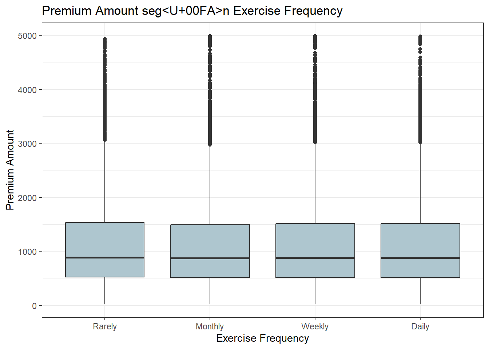
Rarely, Monthly, Weekly y Daily mantienen distribuciones bastante parecidas entre sí, con la mediana cerca de 900, la caja entre 500 y 1,500, y bigotes superiores hasta 3,000 con puntos atípicos que llegan hasta 5,000 en las cuatro categorías. Aunque se esperaría que hacer ejercicio con más frecuencia estuviera asociado a primas más bajas, el patrón se repite de forma casi idéntica sin importar qué tan seguido se ejercite el cliente.
Property Type vs Premium Amount:
ggplot(df, aes(x = `Property Type`, y = `Premium Amount`)) +
geom_boxplot(fill = "#AEC6CF") +
labs(title = "Premium Amount según Property Type", x = "Property Type", y = "Premium Amount")Apartment, Condo y House presentan distribuciones casi idénticas, con la mediana cerca de 900, la caja entre 500 y 1,500, y bigotes superiores hasta 3,000 con puntos atípicos que llegan hasta 5,000 en las tres categorías. El tipo de propiedad tampoco parece influir en el monto de la prima, cerrando así el mismo patrón que se repitió en todas las variables categóricas analizadas.
2.10 Análisis bivariado independienets vs independientes
Para complementar el análisis de las variables independientes con la variable respuesta, a continuación se explora la relación entre las variables independientes numéricas entre sí.
Dado el tamaño del dataset, únicamente para la generación del gráfico ggpairs se utilizará una muestra de los datos en lugar de la totalidad de las observaciones.
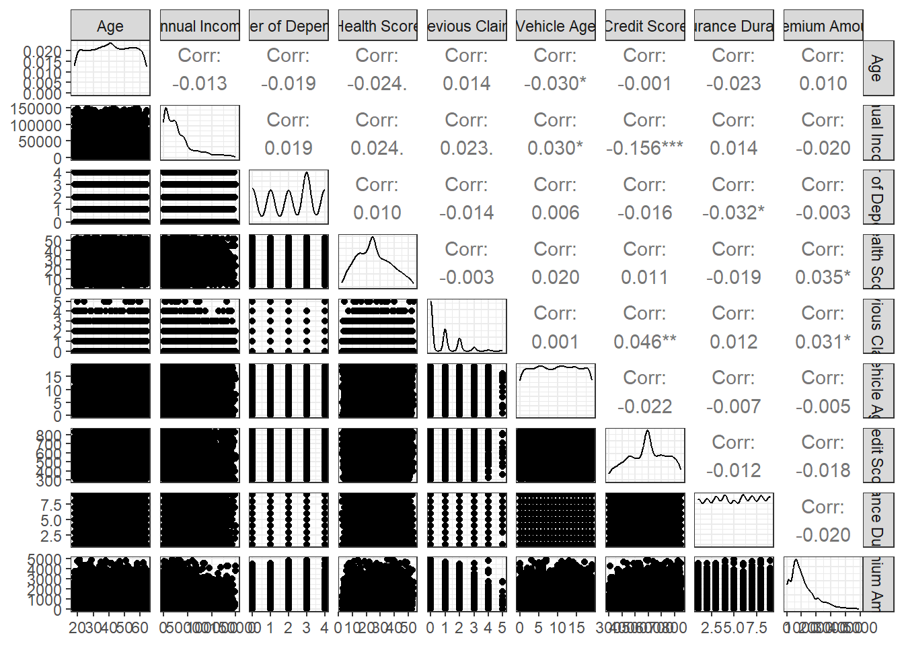
La matriz de correlación muestra que prácticamente no existe relación lineal relevante entre las variables numéricas del dataset, incluyendo Premium Amount. En general, las relaciones entre las variables resultan bastante débiles, sin destacarse ningún par con una asociación considerable entre sí.
A continuación, se analizará con más detalle la relación entre cada par de variables numéricas, con el fin de complementar lo observado en la matriz de correlación general.
Age vs Annual Income
ggplot(df, aes(x = Age, y = `Annual Income`)) +
geom_point(color = "#5B7C99", alpha = 0.02, size = 0.5) +
labs(title = "Age vs Annual Income", x = "Age", y = "Annual Income")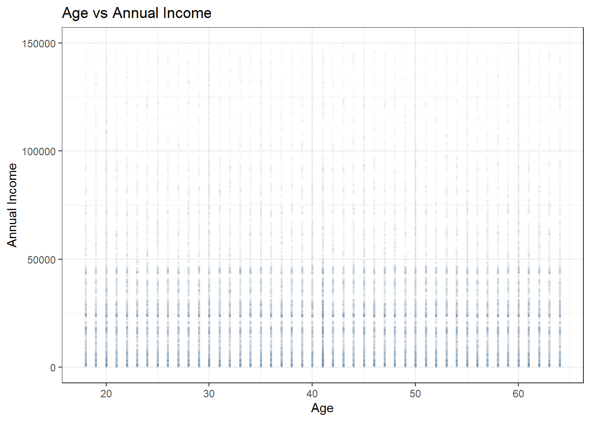
Para prácticamente todas las edades, los valores de Annual Income se distribuyen a lo largo de todo el rango, desde 0 hasta 150,000, con mayor concentración de puntos en la parte baja, entre 0 y 50,000 aproximadamente. No se aprecia ninguna tendencia que relacione la edad del cliente con su ingreso anual, ya que el patrón de dispersión se mantiene prácticamente igual sin importar la edad.
Age vs Health Score
ggplot(df, aes(x = Age, y = `Health Score`)) +
geom_point(color = "#5B7C99", alpha = 0.02, size = 0.5) +
labs(title = "Age vs Health Score", x = "Age", y = "Health Score")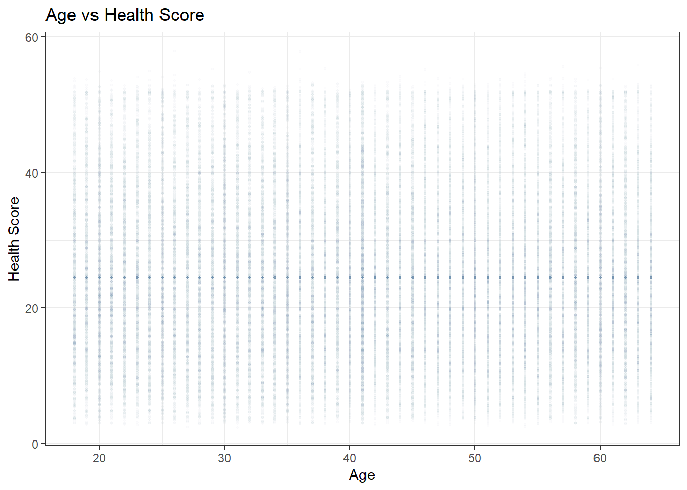
Para cada edad, los valores de Health Score se distribuyen de forma bastante pareja a lo largo de todo el rango, entre 2 y 59 aproximadamente, sin concentrarse especialmente en ninguna zona. No se observa ninguna relación entre la edad del cliente y su puntaje de salud, ya que el patrón de dispersión se mantiene prácticamente idéntico sin importar la edad.
Age vs Previous Claims
ggplot(df, aes(x = Age, y = `Previous Claims`)) +
geom_point(color = "#5B7C99", alpha = 0.02, size = 0.5) +
labs(title = "Age vs Previous Claims", x = "Age", y = "Previous Claims")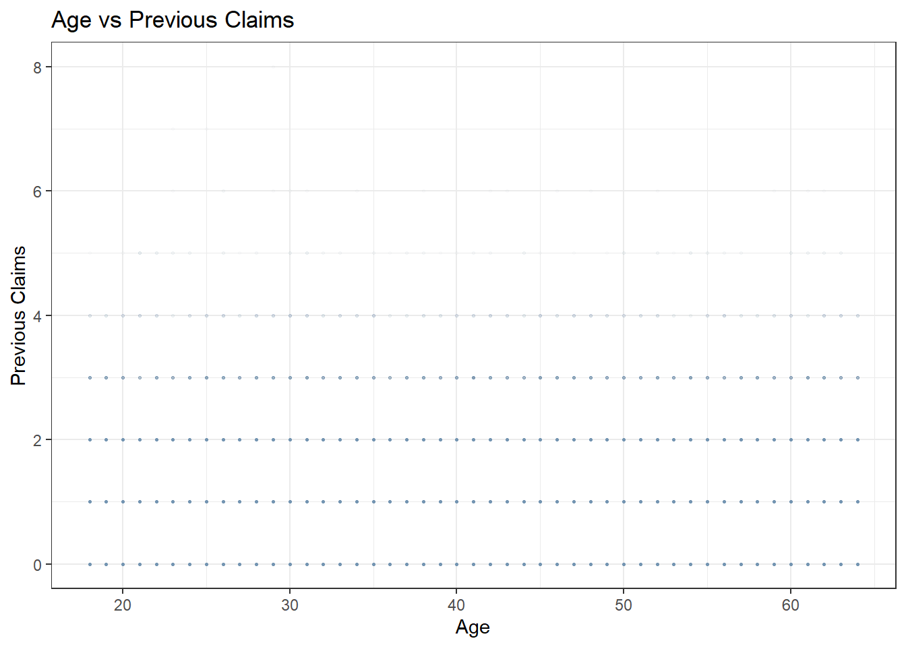
Se observan líneas horizontales bien marcadas en 0, 1 y 2, mientras que a medida que aumenta el número de reclamos previos (3, 4, 5, 6, 7, 8, 9), los puntos se vuelven cada vez más tenues, lo cual coincide con la baja frecuencia de esos valores dentro de la variable. Este patrón se repite de forma similar en todas las edades, por lo que no se aprecia ninguna relación entre la edad del cliente y su cantidad de reclamos previos.
Vehicle Age vs Age
ggplot(df, aes(x = Age, y = `Vehicle Age`)) +
geom_point(color = "#5B7C99", alpha = 0.02, size = 0.5) +
labs(title = "Age vs Vehicle Age", x = "Age", y = "Vehicle Age")Se forma una especie de cuadrícula bastante uniforme, ya que ambas variables toman valores discretos (edades y años de antigüedad del vehículo). Los puntos se distribuyen de manera pareja en todas las combinaciones posibles, sin ninguna concentración particular ni tendencia visible, lo que indica que no existe relación entre la edad del cliente y la antigüedad de su vehículo.
Age vs Credit Score:
ggplot(df, aes(x = Age, y = `Credit Score`)) +
geom_point(color = "#5B7C99", alpha = 0.02, size = 0.5) +
labs(title = "Age vs Credit Score", x = "Age", y = "Credit Score")Para todas las edades, los valores de Credit Score se distribuyen de manera uniforme a lo largo de todo el rango, desde 300 hasta 849, sin ninguna concentración particular en alguna zona específica. No se aprecia una relación entre la edad del cliente y su puntaje crediticio, ya que las líneas se ven prácticamente idénticas para cada edad.
Age vs Insurance Duration:
ggplot(df, aes(x = Age, y = `Insurance Duration`)) +
geom_point(color = "#5B7C99", alpha = 0.02, size = 0.5) +
labs(title = "Age vs Insurance Duration", x = "Age", y = "Insurance Duration")Se forma una cuadrícula bastante uniforme entre ambas variables, ya que la Insurance Duration toma valores discretos del 1 al 9. Los puntos se distribuyen de forma pareja en todas las combinaciones posibles de edad y duración, sin ninguna concentración particular, lo que indica que no existe relación entre la edad del cliente y la duración de su póliza.
Age vs Number of Dependents:
ggplot(df, aes(x = Age, y = `Number of Dependents`)) +
geom_point(color = "#5B7C99", alpha = 0.02, size = 0.5) +
labs(title = "Age vs Number of Dependents", x = "Age", y = "Number of Dependents")Se forma nuevamente una cuadrícula uniforme, ya que Number of Dependents solo toma cinco valores posibles (0 a 4). Los puntos se distribuyen de manera pareja en todas las combinaciones de edad y cantidad de dependientes, sin ninguna concentración destacada, lo que confirma que no existe relación entre la edad del cliente y su número de dependientes.
Annual Income vs Health Score
ggplot(df, aes(x = `Annual Income`, y = `Health Score`)) +
geom_point(color = "#5B7C99", alpha = 0.02, size = 0.5) +
labs(title = "Annual Income vs Health Score", x = "Annual Income", y = "Health Score")Se aprecia una línea horizontal bastante marcada alrededor de 25, con densidad notablemente mayor que el resto, lo cual coincide con los valores imputados con la mediana en Health Score. Se nota además mayor concentración de datos en la zona de ingresos bajos, entre 0 y 50,000, lo cual coincide con la distribución sesgada de Annual Income vista anteriormente. Fuera de esos dos detalles, los puntos se distribuyen de forma pareja a lo largo de todo el rango de Health Score sin importar el nivel de ingreso, por lo que no se observa una relación clara entre ambas variables.
Annual Income vs Previous Claims
ggplot(df, aes(x = `Annual Income`, y = `Previous Claims`)) +
geom_point(color = "#5B7C99", alpha = 0.02, size = 0.5) +
labs(title = "Annual Income vs Previous Claims", x = "Annual Income", y = "Previous Claims")Se observan líneas horizontales bien marcadas en 0, 1, 2 y 3 reclamos, con mayor densidad en la zona de ingresos bajos, coincidiendo con la concentración natural de Annual Income. A medida que aumenta el número de reclamos previos (4 en adelante), las líneas se ven cada vez más tenues, lo cual es coherente con la baja frecuencia de esos valores. En general, este patrón se mantiene similar sin importar el nivel de ingreso, por lo que no se aprecia una relación entre Annual Income y Previous Claims.
Annual Income vs Vehicle Age
ggplot(df, aes(x = `Annual Income`, y = `Vehicle Age`)) +
geom_point(color = "#5B7C99", alpha = 0.02, size = 0.5) +
labs(title = "Annual Income vs Vehicle Age", x = "Annual Income", y = "Vehicle Age")Se forma una cuadrícula bastante uniforme entre ambas variables, con líneas horizontales bien definidas en cada valor de Vehicle Age. Aunque en la matriz de correlación esta pareja mostraba la relación más marcada de todo el conjunto de numéricas, aquí visualmente el patrón se ve bastante disperso y parejo a lo largo de todo el rango de ingresos, sin una tendencia evidente a simple vista.
Annual Income vs Credit Score
ggplot(df, aes(x = `Annual Income`, y = `Credit Score`)) +
geom_point(color = "#5B7C99", alpha = 0.02, size = 0.5) +
labs(title = "Annual Income vs Credit Score", x = "Annual Income", y = "Credit Score")Se observa una línea horizontal bien marcada alrededor de 595, con densidad notablemente mayor que el resto, correspondiente a los valores imputados con la mediana en Credit Score. También se aprecia mayor concentración de puntos en la zona de ingresos bajos, entre 0 y 50,000, en línea con la distribución sesgada de Annual Income. Fuera de esos dos aspectos, los datos se distribuyen de manera uniforme a lo largo de todo el rango de Credit Score, sin importar el nivel de ingreso, por lo que no se identifica una relación clara entre ambas variables.
Annual Income vs Insurance Duration
ggplot(df, aes(x = `Annual Income`, y = `Insurance Duration`)) +
geom_point(color = "#5B7C99", alpha = 0.02, size = 0.5) +
labs(title = "Annual Income vs Insurance Duration", x = "Annual Income", y = "Insurance Duration")Se forman nueve líneas horizontales bien definidas, correspondientes a cada valor de Insurance Duration (de 1 a 9). Los puntos se distribuyen de manera pareja a lo largo de todo el rango de ingresos, con mayor densidad en la zona baja donde se concentra la mayoría de Annual Income, pero sin ninguna tendencia particular que relacione ambas variables.
Annual Income vs Number of Dependents
ggplot(df, aes(x = `Annual Income`, y = `Number of Dependents`)) +
geom_point(color = "#5B7C99", alpha = 0.02, size = 0.5) +
labs(title = "Annual Income vs Number of Dependents", x = "Annual Income", y = "Number of Dependents")Se forman cinco líneas horizontales bien definidas, correspondientes a cada valor de Number of Dependents (0 a 4), con una densidad ligeramente mayor en el valor 0. Los puntos se reparten de forma pareja a lo largo de todo el rango de ingresos, sin que exista una tendencia que vincule el número de dependientes con el nivel de ingreso anual del cliente.
Health Score vs Previous Claims
ggplot(df, aes(x = `Health Score`, y = `Previous Claims`)) +
geom_point(color = "#5B7C99", alpha = 0.02, size = 0.5) +
labs(title = "Health Score vs Previous Claims", x = "Health Score", y = "Previous Claims")Se observan líneas horizontales bien marcadas en 0, 1, 2 y 3 reclamos, distribuidas de manera pareja a lo largo de todo el rango de Health Score. A partir de 4 reclamos en adelante, las líneas se vuelven cada vez más tenues, coincidiendo con la menor frecuencia de esos valores. En general, el comportamiento se mantiene similar sin importar el puntaje de salud del cliente, por lo que no se identifica relación entre ambas variables.
Health Score vs Vehicle Age
ggplot(df, aes(x = `Health Score`, y = `Vehicle Age`)) +
geom_point(color = "#5B7C99", alpha = 0.02, size = 0.5) +
labs(title = "Health Score vs Vehicle Age", x = "Health Score", y = "Vehicle Age")Se forman veinte líneas horizontales bien definidas, correspondientes a cada valor de Vehicle Age (de 0 a 19). Los puntos se distribuyen de manera pareja a lo largo de todo el rango de Health Score, sin ninguna concentración particular, lo que indica que no existe relación entre el puntaje de salud del cliente y la antigüedad de su vehículo.
Health Score vs Credit Score
ggplot(df, aes(x = `Health Score`, y = `Credit Score`)) +
geom_point(color = "#5B7C99", alpha = 0.02, size = 0.5) +
labs(title = "Health Score vs Credit Score", x = "Health Score", y = "Credit Score")Se observan dos líneas bien marcadas: una horizontal alrededor de 595 en Credit Score y otra vertical cerca de 25 en Health Score, ambas correspondientes a los valores imputados con la mediana de cada variable. Fuera de esas dos intersecciones, los puntos se distribuyen de manera uniforme a lo largo de todo el gráfico, sin ninguna tendencia particular que relacione ambas variables.
Health Score vs Insurance Duration
ggplot(df, aes(x = `Health Score`, y = `Insurance Duration`)) +
geom_point(color = "#5B7C99", alpha = 0.02, size = 0.5) +
labs(title = "Health Score vs Insurance Duration", x = "Health Score", y = "Insurance Duration")Se forman nueve líneas horizontales bien definidas, correspondientes a cada valor de Insurance Duration (de 1 a 9). Los puntos se distribuyen de manera pareja a lo largo de todo el rango de Health Score, sin ninguna concentración particular, lo que indica que no existe relación entre el puntaje de salud del cliente y la duración de su póliza.
Health Score vs Number of Dependents
ggplot(df, aes(x = `Health Score`, y = `Number of Dependents`)) +
geom_point(color = "#5B7C99", alpha = 0.02, size = 0.5) +
labs(title = "Health Score vs Number of Dependents", x = "Health Score", y = "Number of Dependents")Se forman cinco líneas horizontales bien definidas, correspondientes a cada valor de Number of Dependents (0 a 4). Los puntos se distribuyen de manera pareja a lo largo de todo el rango de Health Score, sin ninguna concentración destacada, lo que confirma que no existe relación entre el puntaje de salud del cliente y su número de dependientes.
Previous Claims vs Vehicle Age
ggplot(df, aes(x = `Previous Claims`, y = `Vehicle Age`)) +
geom_point(color = "#5B7C99", alpha = 0.02, size = 0.5) +
labs(title = "Previous Claims vs Vehicle Age", x = "Previous Claims", y = "Vehicle Age")Se forma una cuadrícula donde las columnas más marcadas corresponden a 0, 1, 2 y 3 reclamos previos, mientras que a partir de 4 en adelante los puntos se vuelven cada vez más tenues, coincidiendo con la baja frecuencia de esos valores. Dentro de cada columna, los puntos se reparten de forma pareja en todo el rango de Vehicle Age, por lo que no se observa relación entre ambas variables.
Previous Claims vs Credit Score
ggplot(df, aes(x = `Previous Claims`, y = `Credit Score`)) +
geom_point(color = "#5B7C99", alpha = 0.02, size = 0.5) +
labs(title = "Previous Claims vs Credit Score", x = "Previous Claims", y = "Credit Score")Se forman columnas verticales bien definidas en 0, 1, 2, 3 y 4 reclamos previos, que se van desvaneciendo progresivamente a partir de 5, coincidiendo con la menor frecuencia de esos valores. Dentro de cada columna, los puntos se reparten a lo largo de todo el rango de Credit Score, sin una concentración particular, por lo que no se identifica relación entre ambas variables.
Previous Claims vs Insurance Duration
ggplot(df, aes(x = `Previous Claims`, y = `Insurance Duration`)) +
geom_point(color = "#5B7C99", alpha = 0.02, size = 0.5) +
labs(title = "Previous Claims vs Insurance Duration", x = "Previous Claims", y = "Insurance Duration")Se forma una cuadrícula donde las columnas correspondientes a 0, 1, 2 y 3 reclamos previos se ven más marcadas, mientras que a partir de 4 en adelante se van desvaneciendo, en línea con la menor frecuencia de esos valores. Dentro de cada combinación, la duración de la póliza se distribuye de forma pareja entre 1 y 9 años, sin evidenciar una relación entre ambas variables.
Previous Claims vs Number of Dependents
ggplot(df, aes(x = `Previous Claims`, y = `Number of Dependents`)) +
geom_point(color = "#5B7C99", alpha = 0.02, size = 0.5) +
labs(title = "Previous Claims vs Number of Dependents", x = "Previous Claims", y = "Number of Dependents")Se forma una cuadrícula donde las columnas de 0, 1, 2 y 3 reclamos previos se ven más definidas, mientras que a partir de 4 en adelante se van desvaneciendo, coincidiendo con la menor frecuencia de esos valores. Dentro de cada columna, el número de dependientes se distribuye de forma pareja entre 0 y 4, sin evidenciar una relación entre ambas variables.
Vehicle Age vs Credit Score
ggplot(df, aes(x = `Vehicle Age`, y = `Credit Score`)) +
geom_point(color = "#5B7C99", alpha = 0.02, size = 0.5) +
labs(title = "Vehicle Age vs Credit Score", x = "Vehicle Age", y = "Credit Score")Se forman veinte líneas verticales bien definidas, correspondientes a cada valor de Vehicle Age (de 0 a 19). Los puntos se distribuyen de manera uniforme a lo largo de todo el rango de Credit Score, desde 300 hasta 849, sin ninguna concentración particular, lo que indica que no existe relación entre la antigüedad del vehículo y el puntaje crediticio del cliente.
Vehicle Age vs Insurance Duration
ggplot(df, aes(x = `Vehicle Age`, y = `Insurance Duration`)) +
geom_point(color = "#5B7C99", alpha = 0.02, size = 0.5) +
labs(title = "Vehicle Age vs Insurance Duration", x = "Vehicle Age", y = "Insurance Duration")Se forma una cuadrícula bastante uniforme entre ambas variables, ya que las dos toman valores discretos. Los puntos se distribuyen de forma pareja en todas las combinaciones posibles de antigüedad del vehículo y duración de la póliza, sin ninguna concentración particular, lo que indica que no existe relación entre ambas variables.
Vehicle Age vs Number of Dependents
ggplot(df, aes(x = `Vehicle Age`, y = `Number of Dependents`)) +
geom_point(color = "#5B7C99", alpha = 0.02, size = 0.5) +
labs(title = "Vehicle Age vs Number of Dependents", x = "Vehicle Age", y = "Number of Dependents")Se forma una cuadrícula bastante uniforme entre ambas variables, ya que Number of Dependents solo toma cinco valores posibles (0 a 4). Los puntos se distribuyen de manera pareja en todas las combinaciones de antigüedad del vehículo y cantidad de dependientes, sin ninguna concentración destacada, lo que confirma que no existe relación entre ambas variables.
Credit Score vs Insurance Duration
ggplot(df, aes(x = `Credit Score`, y = `Insurance Duration`)) +
geom_point(color = "#5B7C99", alpha = 0.02, size = 0.5) +
labs(title = "Credit Score vs Insurance Duration", x = "Credit Score", y = "Insurance Duration")Se forman nueve líneas horizontales bien definidas, correspondientes a cada valor de Insurance Duration (de 1 a 9). Los puntos se distribuyen de manera uniforme a lo largo de todo el rango de Credit Score, sin ninguna concentración particular, lo que indica que no existe relación entre el puntaje crediticio del cliente y la duración de su póliza.
Credit Score vs Number of Dependents:
ggplot(df, aes(x = `Credit Score`, y = `Number of Dependents`)) +
geom_point(color = "#5B7C99", alpha = 0.02, size = 0.5) +
labs(title = "Credit Score vs Number of Dependents", x = "Credit Score", y = "Number of Dependents")Se forman cinco líneas horizontales bien definidas, correspondientes a cada valor de Number of Dependents (0 a 4). Los puntos se distribuyen de manera uniforme a lo largo de todo el rango de Credit Score, sin ninguna concentración destacada, lo que confirma que no existe relación entre el puntaje crediticio del cliente y su número de dependientes.
Insurance Duration vs Number of Dependents:
ggplot(df, aes(x = `Insurance Duration`, y = `Number of Dependents`)) +
geom_point(color = "#5B7C99", alpha = 0.02, size = 0.5) +
labs(title = "Insurance Duration vs Number of Dependents", x = "Insurance Duration", y = "Number of Dependents")Se forma una cuadrícula uniforme entre ambas variables, ya que las dos toman pocos valores discretos. Los puntos se distribuyen de manera pareja en todas las combinaciones posibles de duración de la póliza y número de dependientes, sin ninguna concentración destacada, lo que confirma que no existe relación entre ambas variables.
Tras analizar la relación entre todas las combinaciones posibles de variables numéricas independientes, se observa un patrón bastante consistente a lo largo de todo el análisis: en la mayoría de los casos no se identifica una relación clara entre las variables, ya que los datos se distribuyen de manera uniforme sin mostrar tendencias, agrupaciones o patrones particulares. Las únicas irregularidades visibles corresponden a las variables que fueron imputadas con la mediana (Health Score y Credit Score), donde se aprecia una línea de mayor densidad en el valor imputado, así como en Previous Claims, donde la menor frecuencia de reclamos altos se refleja en una disminución progresiva de la densidad de puntos. En conjunto, estos resultados respaldan lo observado previamente en la matriz de correlación, confirmando que las variables numéricas del dataset no presentan relaciones lineales fuertes entre sí.
df <- dplyr::rename(
df,
Premium_Amount = `Premium Amount`,
Smoking_Status = `Smoking Status`,
Policy_Type = `Policy Type`,
Health_Score = `Health Score`,
Exercise_Frequency = `Exercise Frequency`,
Annual_Income = `Annual Income`,
Vehicle_Age = `Vehicle Age`,
Marital_Status = `Marital Status`,
Education_Level = `Education Level`,
Customer_Feedback = `Customer Feedback`,
Previous_Claims = `Previous Claims`,
Credit_Score = `Credit Score`,
Number_of_Dependents = `Number of Dependents`,
Property_Type = `Property Type`,
Insurance_Duration = `Insurance Duration`
)